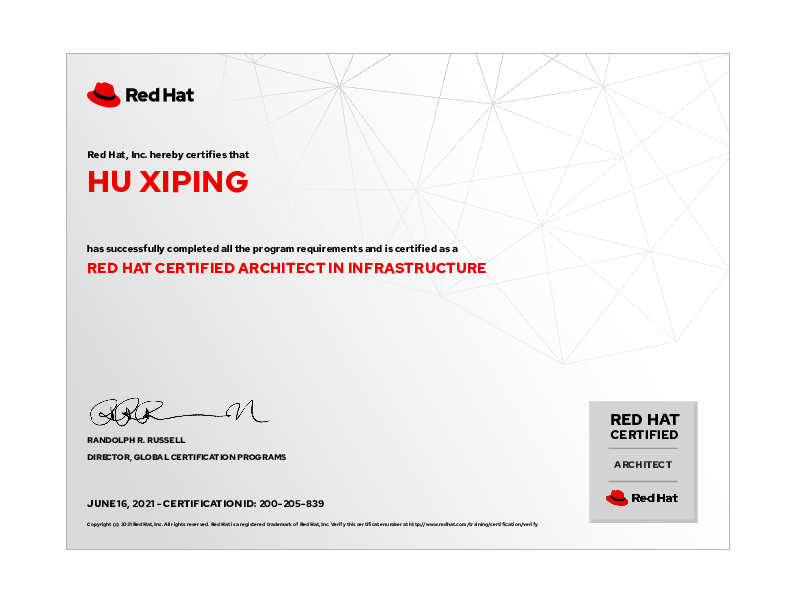
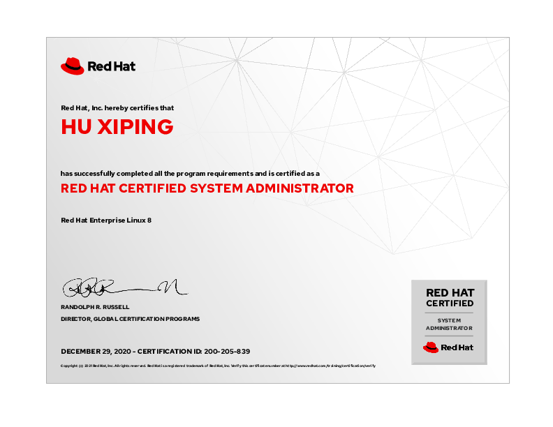
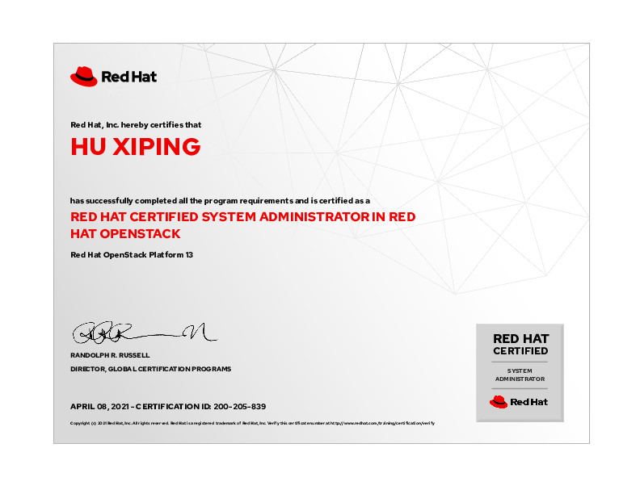
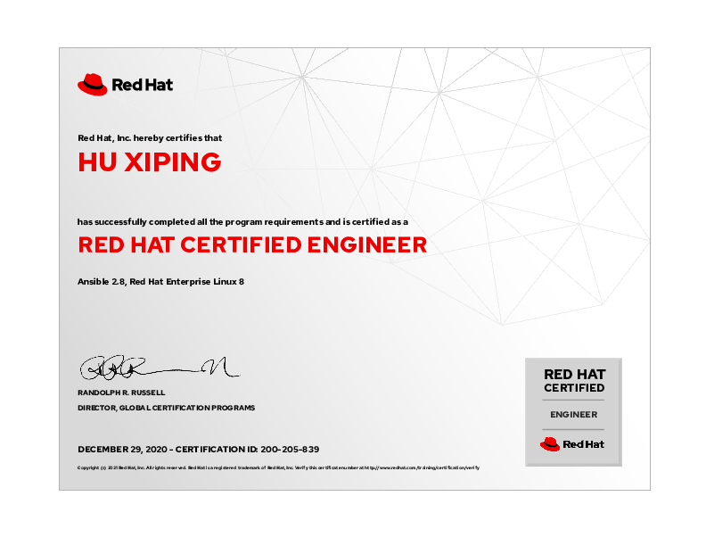
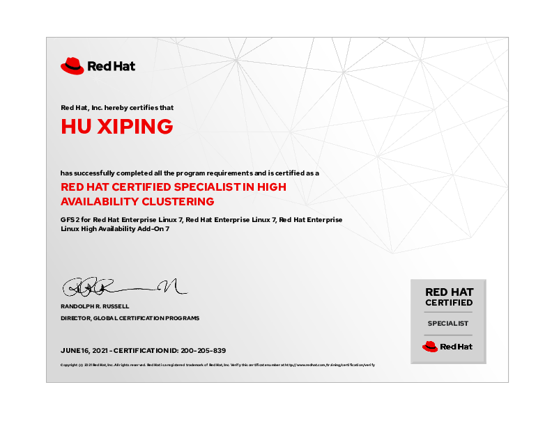
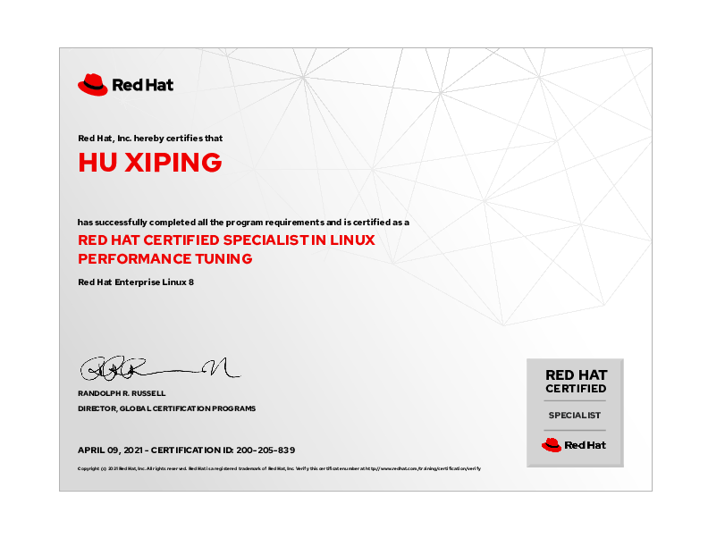

hxp 的文档库¶
此网站为 胡喜平 个人文档库。包含日常 Linux、存储、容器等所有技术研发的笔记。
1. 个人简介¶
胡喜平，Linux 狂热爱好者，从 14 岁日常使用 Linux ，大学三年级获得 RedHat Linux 最高级认证 RHCA ，2 年 Arch Linux 、1 年 Gentoo 使用经验，具有丰富的 Linux 日常和企业使用经验，能通过自己折腾解决非常多的问题。
负责某国有大型银行 Ansible 及 AWX 的搭建和自动化问题、几乎所有和 Linux 沾边的事情，GPFS、Oracle、Redis、MySQL-cmha 等自动安装脚本、 Linux 故障和性能问题分析。
2.1 华中科技大学 Linux 社团创始人¶
- 创建华中科技大学 Linux 社团，负责社团 Gentoo Linux 服务器建设。
- 和校超算中心举办讲座 https://imo.hust.edu.cn/info/1353/4670.htm
2.2 某大型国有银行 Ansible 堡垒机和 AWX 建设¶
- 独自完成在银河麒麟 V10 信创系统上，搭建 4 个不同网络区域的 Kubernetes 集群，并将其作为 AWX 的容器组。将开源 AWX-23.9 使用 awx-operator 部署并自建 Keycloak 单点登陆系统、使用 SAML 对接。
- 完成 Ansible 堡垒机的容器化改造，解决不同人用相同账号上堡垒机时，每个登录之间相互隔离且有 root 权限、灰度发布等功能。
- 负责日常中间件安装、生产变更的 Ansible 脚本维护。
- 负责基于 Python 的 Ansible 模块编写。
3. 个人所获得的专业认证¶
3.1 RedHat 认证架构师（RHCA）¶

3.2 Kubernetes CKA 认证¶

3.3 RedHat 认证 Ceph 存储管理员¶
3.4 RedHat 认证系统管理员¶

3.5 RedHat 认证 OpenStack 系统管理员¶

3.6 RedHat 认证 OpenShift 管理专家¶
3.7 RedHat 认证工程师¶

3.8 RedHat 认证高可用集群专家¶

3.9 RedHat 认证 Linux 性能调优专家¶

容器技术
Kubernetes
银河麒麟 V10 安装 Kubernetes¶
1. 系统架构¶
本次安装的 K8S 仅有 3 个 master 节点，其中 1 节点和 3 节点额外 HAProxy 和 Keepalived 做 apiserver 高可用，各个节点配置和用途如下：
| 节点名称 | IP 地址 | 服务器角色 | 配置要求 |
|---|---|---|---|
| k8s01 | 192.168.100.11 | K8S master 节点 | 2C4G，公网网卡名称 ens33 |
| k8s02 | 192.168.100.12 | K8S master 节点 | 2C4G，公网网卡名称 ens33 |
| k8s03 | 192.168.100.13 | K8S master 节点 | 2C4G，公网网卡名称 ens33 |
其中，所有的节点都需要配置 NTP 时钟同步服务器，且所有节点都需要有默认网关。节点 k8s01 和 k8s03 因有安装 KeepAlived 的需求，需要额外配置一个 VIP：192.168.100.10，同时，需要使用 Ansible 对这 3 个节点进行批量配置。
此次安装为最小化安装，安装网络插件 calico，ingress、helm、ceph-csi 、metrics-server 等非必要功能不安装。同时，推荐提前创建 /var/lib/containerd 目录并给其单独挂在逻辑卷。
2.1 安装前系统参数¶
所有节点均需要禁用 swap、关闭 firewalld 防火墙与 SELinux：
对于 1C2G 的低配置机器，如果发现内存不足，需要修改 kdump 的默认 1024M 内存为更小的数值：
2.2 安装依赖的软件¶
所有 k8s 节点都需要使用 yum 命令安装以下依赖：
2.3 Ansible 主机清单配置¶
本文使用 Ansible 来对节点进行批量操作，Ansible 主机清单配置如下：
2.4 介质下载¶
如果需要离线安装，需要额外准备一台可以通外网的机器来下载介质，此机器也需要禁用 swap、关闭 firewalld 防火墙与 SELinux，且至少需要安装 docker、containerd 与 helm。其中需要下载的二进制文件及配置文件如下：
需要下载的容器镜像如下：
| 镜像名称 | 下载方式 |
|---|---|
| registry.k8s.io/kube-apiserver:v1.29.0 | 使用 ctr 或者 docker 命令下载 |
| registry.k8s.io/kube-controller-manager:v1.29.0 | 使用 ctr 或者 docker 命令下载 |
| registry.k8s.io/kube-scheduler:v1.29.0 | 使用 ctr 或者 docker 命令下载 |
| registry.k8s.io/kube-proxy:v1.29.0 | 使用 ctr 或者 docker 命令下载 |
| registry.k8s.io/coredns/coredns:v1.11.1 | 使用 ctr 或者 docker 命令下载 |
| registry.k8s.io/pause:3.9 | 使用 ctr 或者 docker 命令下载 |
| registry.k8s.io/etcd:3.5.10-0 | 使用 ctr 或者 docker 命令下载 |
| docker.io/library/haproxy:2.1.4 | 使用 ctr 或者 docker 命令下载 |
| docker.io/osixia/keepalived:2.0.17 | 使用 ctr 或者 docker 命令下载 |
| docker.io/calico/apiserver:v3.27.0 | 使用 ctr 或者 docker 命令下载 |
| docker.io/calico/cni:v3.27.0 | 使用 ctr 或者 docker 命令下载 |
| docker.io/calico/csi:v3.27.0 | 使用 ctr 或者 docker 命令下载 |
| docker.io/calico/kube-controllers:v3.27.0 | 使用 ctr 或者 docker 命令下载 |
| docker.io/calico/node-driver-registrar:v3.27.0 | 使用 ctr 或者 docker 命令下载 |
| docker.io/calico/node:v3.27.0 | 使用 ctr 或者 docker 命令下载 |
| docker.io/calico/pod2daemon-flexvol:v3.27.0 | 使用 ctr 或者 docker 命令下载 |
| quay.io/tigera/operator:v1.32.3 | 使用 ctr 或者 docker 命令下载 |
| docker.io/calico/typha:v3.27.0 | 使用 ctr 或者 docker 命令下载 |
容器镜像使用 ctr 或者 docker 命令下载，ctr 的下载命令如下：
docker 下载的命令如下：
导入容器镜像，需要在 k8s 节点用 ctr 命令导入，命令如下：
3. 安装 containerd 容器运行环境¶
所有的 k8s 节点都需要安装 containerd，使用此 Ansible Playbook 进行批量安装：
4. 安装 Kubernetes¶
4.1 配置内核参数并安装 k8s 二进制文件¶
使用以下 playbook 配置内核参数、安装二进制文件并导入容器镜像：
4.2 配置所有节点/etc/hosts¶
4.2.1 创建 jinja2 模板文件¶
创建一个 jinja2 模板文件用于配置 hosts，将其放在 templates 目录下：
| hosts.j2 | |
|---|---|
4.2.2 使用 Ansible Playbook 配置/etc/hosts¶
使用以下 Ansible Playbook 批量配置/etc/hosts：
4.3 使用 static pod 方式安装 Keepalived 和 HAProxy¶
Warning
在生产环境，如果负载均衡器可用，推荐使用负载均衡器来实现 apiserver 高可用。如果没有负载均衡器，推荐单独发放 2 台虚拟机做 HAProxy 和 Keepalived 进行软负载高可用。如果实在无法满足条件，在 2 个 k8s 节点以 static pod 方式安装 HAProxy 和 Keepalived。
4.3.1 创建 jinja2 模板文件¶
一共需要创建 4 个 jinja2 模板文件，将其放在 templates 目录下：
4.3.2 使用 Ansible Playbook 安装 HAProxy 和 Keepalived 的 static pod¶
使用以下 Playbook 安装 HAProxy 和 Keepalived 的 static pod：
4.4 使用 kubeadm 创建 Kubernetes 集群¶
在 k8s01 节点创建集群：
创建成功后会有以下提示：
在 k8s02 和 k8s03 执行：
将两个节点加入集群，之后所有 k8s 节点都修改 bashrc：
检查集群状态：
此时 NotReady 是因为没有安装 calico，为正常现象。
4.5 设置允许 master 节点调度容器¶
集群创建以后，因为我们只有 master 节点，需要允许容器在 master 节点调度：
5. 安装 Calico 网络插件¶
5.1 配置 NetworkManager¶
所有节点都需要配置 NetworkManager 忽略 calico 网卡，可使用以下 playbook 批量配置：
5.2 创建 tigera-operator 并安装 calico¶
创建 custom-resources.yaml：
在任意一个 k8s 节点上运行：
检查 pod 状态：
在完全就绪以后，在 k8s 上查看路由表，可以看到 calico 为每个 k8s 节点都分配了一个网段，网段写入了路由表：
完全就绪以后，检查两个 coredns 是不是扎堆部署在一个节点上：
如果有这种情况，需要轮询重启 coredns 来使得 coredns 不扎堆在一个节点：
6. 参考链接¶
https://kubernetes.io/docs/setup/production-environment/tools/kubeadm/install-kubeadm/
https://kubernetes.io/docs/setup/production-environment/container-runtimes/
https://kubernetes.io/docs/setup/production-environment/tools/kubeadm/high-availability/
https://docs.tigera.io/calico/latest/getting-started/kubernetes/quickstart
对接 CephFS 存储¶
1. 准备工作¶
1.1 介质下载¶
需要使用以下命令下载 ceph-csi-cephfs 的 helm chart：
同时需要下载此 helm chart 所需的容器镜像，镜像名称用以下命令查看：
2. 新建 cephfs 和 volume¶
在 ceph 服务器上，使用cephadm shell进入 ceph 命令行，并执行以下命令：
执行以后检查：
3. ceph 集群配置和 admin keyring 收集¶
在 ceph 节点上，收集 ceph 配置和 admin 的 keyring：
4. 创建 values.yaml¶
首先生成 values.yaml：
修改以下的部分：
5. 使用 helm chart 安装 ceph-csi-cephfs¶
6. 将 ceph-csi-sc 设置为默认 storage class¶
7. 创建 pvc 并测试¶
新建文件test-pvc.yaml：
| test-pvc.yaml | |
|---|---|
创建 pvc：
检查 pvc 状态为 Bound 则为安装成功：
如果要查询这个 pvc 对应的 pv 对应的 cephfs 存储位置，可使用以下命令：
清理：
8. 在非 k8s 节点挂载 cephfs 的方法¶
8.1 安装并配置 ceph-fuse¶
在 ceph 客户端上安装 ceph-fuse：
配置/etc/ceph/ceph.conf：
配置 keyring：
8.2 临时挂在 cephfs¶
如果要临时挂载，使用命令：
8.3 永久挂载 cephfs¶
如果要永久挂载，则配置/etc/fstab，加入以下行：
再挂载 cephfs：
9. 参考链接¶
安装 traefik ingress controller¶
1. 准备工作¶
1.1 介质下载¶
需要使用以下命令下载 traefik 的 helm chart：
同时需要下载此 helm chart 所需的容器镜像，镜像名称用以下命令查看：
如果需要测试 traefik 部署，还需要下载容器镜像docker.io/traefik/whoami:v1.10，并从 traefik 官网的 QuickStart 章节下载 yaml 文件03-whoami.yml、03-whoami-services.yml和04-whoami-ingress.yml。
2. 创建并修改 values¶
创建values.yaml：
如果使用私有镜像仓库，需要修改image和imagePullSecrets。
3. 部署 helm chart¶
创建 namespace 并部署：
将容器部署修改为 3 个：
4. 配置负载均衡器¶
首选查询 traefik 的 NodePort 端口：
这里 http 端口 30795，https 端口 32752，配置负载均衡器的 80 端口转发到所有 k8s 节点 30795 端口，443 端口转发到所有 k8s 节点 32752 端口，负载模式为 TCP 轮询。如果使用的是在 k8s master 节点使用 static pod 方式安装 HAProxy 和 Keepalived 的方式，则需要修改 HAProxy 配置：
static pod 重启必须使用 crictl 命令，首先找到 static pod 的容器 ID：
然后停止容器：
在停止容器后 kubelet 会自动将其重新拉起。
5. 创建 whoami 容器进行验证¶
在 default 命名空间，创建 whoami 容器、service 和 ingress：
使用 curl 命令检查：
可以看到 whoami 容器收到的请求里带着文根 whoami，之后测试 middleware 去除文根功能，修改04-whoami-ingress.yml如下：
修改完成后应用 yaml 配置：
用 curl 命令测试：
注意这里的GET /whoami/ HTTP/1.1变成了GET / HTTP/1.1，说明 middleware 生效。最后清理测试使用的资源：
6. 参考链接¶
https://doc.traefik.io/traefik/getting-started/install-traefik/#use-the-helm-chart
https://github.com/traefik/traefik-helm-chart/blob/master/EXAMPLES.md
安装 helm 包管理器¶
1. 准备工作¶
1.1 介质下载¶
| 介质名称 | 下载地址 |
|---|---|
| helm-v3.14.0-linux-amd64.tar.gz | https://github.com/helm/helm/releases |
2. 使用 Ansible Playbook 为所有 k8s 节点批量安装 helm¶
将 helm 二进制程序放到/usr/local/bin/即可完成安装，playbook 如下：
| helm-install.yaml | |
|---|---|
3. 参考链接¶
https://helm.sh/docs/intro/install/
https://stackoverflow.com/questions/50343089/how-to-use-helm-charts-without-internet-access
https://stackoverflow.com/questions/60892265/extract-docker-images-from-helm-chart
安装 metrics-server¶
1. 准备工作¶
1.1 介质下载¶
需要使用以下命令下载 metrics-server 的 helm chart：
同时需要下载此 helm chart 所需的容器镜像，镜像名称用以下命令查看：
2. 使用 helm 安装 metrics-server¶
在其中一个节点创建 metrics-server 的 namespace 并安装：
创建之后，修改 deployments 配置：
新增- --kubelet-insecure-tls配置，修改之后如下：
修改之后轮询重启容器，并将容器修改为部署 3 个：
部署完成后检查资源状态：
之后执行kubectl top pods -A和kubectl top nodes，观察有无报错。
配置私有镜像仓库凭证¶
1. docker 配置添加¶
在 Nexus 虚拟机192.168.100.12上，获取 docker 配置~/.docker/config.json如下：
将此配置复制到 kubernetes 的 master 节点的/tmp/config.json，并加入凭证到 keycloak 命名空间：
2. CA 证书添加¶
在 Nexus 虚拟机192.168.100.12上，获取 CA 证书/etc/docker/certs.d/192.168.100.12:8082/ca.crt，将其复制到所有 k8s 节点的/etc/pki/ca-trust/source/anchors/nexus.crt，并在所有节点更新证书：
之后还需要重启 containerd：
3. 使用凭证拉取镜像¶
在命名空间 keycloak 创建一个 pod，使用凭证 nexus-regcred 拉取镜像，新建文件test-pod.yaml：
| test-pod.yaml | |
|---|---|
创建 pod：
禁用容器镜像垃圾回收并配置磁盘相关容器漂移策略¶
1. 在无镜像仓库的情况下使用 k8s 的问题¶
k8s 默认有一个垃圾回收机制，而且容器的临时存储和容器的镜像存储都在/var 目录下，因此只要有/var 目录大于 85%的情况（无论是容器写临时文件还是/var 目录下生成了其它特别大的东西，还是导入容器镜像），k8s 就会把所有的容器赶走，同时会对容器镜像垃圾回收。但是，由于容器已经都被赶走了，垃圾回收会把这些容器镜像删掉，之后如果容器镜像是在节点手动导入而非从镜像仓库拉取，则会导致容器镜像永远丢失，节点/var 目录清理或扩容后，仍旧无法启动容器。因此需要把容器的存储位置单独挂盘，并且禁用容器镜像的垃圾回收。
还是不推荐不搭建一个镜像仓库，因为这种方法一旦容器的目录真的满了，必须人工上去 ctr 命令删除容器
2. 修改 kubelet 配置¶
在/var/lib/kubelet/config.yaml中，配置 k8s 节点在容器临时文件存储低于 10% 时，赶走所有容器到其它节点，且容器镜像不使用 100 年后才清理：
重启 kublet：
3. 将 /var/lib/containerd 单独挂载 lv，防止系统日志挤占容器空间¶
3.1 腾空一个 k8s 节点¶
3.2 清理数据¶
停止 kubelet：
删除所有容器：
删除容器镜像：
停止 containerd 并清理 containerd 目录：
将 containerd 镜像目录单独挂载 lv：
启动 containerd 和 kubelet，并解除隔离状态：
3.3 重新导入容器镜像并检查：¶
4. 参考链接¶
https://kubernetes.io/docs/reference/command-line-tools-reference/kubelet/
https://kubernetes.io/docs/tasks/administer-cluster/kubelet-config-file/
https://kubernetes.io/docs/reference/config-api/kubelet-config.v1beta1/
local-path-provisioner 安装¶
1. 创建 kubernetes 相关资源¶
下载 yaml 文件并应用：
2. 创建 local-path-provisioner 目录¶
在所有节点，创建/opt/local-path-provisioner目录（建议对此目录单独建立逻辑卷
3. 将 local-path-provisioner 设置为默认 StorageClass¶
4. 测试并验证¶
创建 pvc 并测试，新建文件test-pvc.yaml：
创建 pvc：
由于 VolumeBindingMode 设置成了 WaitForFirstConsumer，需要启动一个 pod 来使用 pvc，pv 才会被创建：
检查 pvc 为 Bound 状态：
扩容 master 节点¶
1. 在已有的节点上生成加入节点的命令¶
在已有的 master 节点生成证书和加入集群命令：
2. 在新节点加入 K8S 集群¶
在新节点上使用 kubeadm 命令加入集群，并作为 master 节点：
3. 配置 NetworkManager 忽略 calico 网卡¶
如果 k8s 集群使用 calico 作为网络插件，还需要配置 NetworkManager 忽略 calico 网卡，可使用以下 playbook 批量配置：
4. 修改 bashrc¶
修改 bashrc 使得默认 kubectl 命令连接此 k8s 集群：
k3s 删除 namespace 卡死在 Terminating 解决方法¶
1. 问题现象¶
k3s 在删除 namespace 时，卡死，按 Ctrl-C 后发现 namespace 一直处于 Terminating 状态：
用以下命令清理：
3. 参考文献¶
https://stackoverflow.com/questions/52369247/namespace-stucked-as-terminating-how-i-removed-it
k8s 开启 swap 支持¶
1. 隔离并驱逐所有容器¶
2. 修改 kubelet 配置¶
修改 /var/lib/kubelet/config.yaml ：
修改为：
3. 重启 kubelet¶
Docker&Podman
Dockerfile 中不保留编译缓存¶
在构建 OnlyOffice 的 Docker 镜像时，需要在 Dockerfile 里下载源代码并编译，但是源代码编译后，编译的缓存由 40GB，导致镜像最终由 44GB，但是实际有用的只是编译后的二进制文件。原先的 Dockerfile 如下：
这个 Dockerfile 构建出的镜像中，只有 /build/build_tools/out/linux_64/onlyoffice/documentserver 中的文件有用，其它文件没有用。如果尝试在 Dockerfile 中将其 rm -rf 掉，会不起作用。因为写入 image layer 的东西是删不掉的。这时候就需要使用 Dockerfile 的多阶段构建：
即先构建一个编译镜像，然后把编译镜像里生成的有用的东西复制到第二个镜像，再构建第二个镜像。
同时，编译完成以后，还需要清理 docker 的 overlay2 里的缓存等其它缓存：
1. 参考链接¶
基于 eBPF 的容器审计技术的实现¶
1. 项目需求¶
某项目需要监视运行在 podman 宿主机内容器中所有文件的修改和系统调用，作为审计日志。日志中至少需要包含执行命令的容器、命令内容或修改的文件。
使用 auditd 无法实现此需求，因为容器内 auditd 无法启动，audit 依赖于内核 kaudit 进程，其工作方式为内核态 kauditd 在系统调用层记录日志，把日志放入一个 netlink 套接字中，用户态 auditd 进程监听这个套接字，将日志转储到系统日志或日志文件中。且一个机器上只要有一个容器或者宿主机开启 auditd ，其它容器或宿主机都无法再次启动 auditd 。
而且， auditd 不支持 namespace ，不可能知道是那个容器里执行了什么命令。因此解决这个方法需要使用 eBPF 内核探针。
此方案在 RHEL8 内核版本 4.18.0-553.el8_10 ， podman 版本 4.9.4-rhel 上测试通过。
2. 云原生方案下的容器审计工具 Tetragon¶
Tetragon 是一个应用于 k8s 、 docker 等容器环境下的审计工具，它依赖于 eBPF 技术，以容器的方式运行，通过 eBPF 的 kprobe 设立 hook 的方式完成对一个容器宿主机上所有容器的命令执行与文件修改、甚至网络连接的审计。本次方案在 podman 容器宿主机上使用此方案实现。
3. 运行 Tetragon 容器¶
首先新建文件审计配置文件 file_monitoring.yaml ：
注意，实际使用中，需要对此配置文件进行调整。此配置文件审计所有文件，日志量极大。新建日志存储路径配置 export-filename :
之后启动 Tetragon 容器：
如果想查看实时审计日志：
4. 测试审计结果¶
运行一个临时的 ubuntu 容器：
之后在容器内部，运行命令：
之后进入 Tetragon 容器：
查看审计日志：
找到审计日志如下：
5. 参考资料¶
https://tetragon.io/docs/getting-started/file-events/
https://tetragon.io/docs/concepts/tracing-policy/options/
https://github.com/cilium/tetragon/blob/main/examples/quickstart/file_monitoring.yaml
https://medium.com/@boutnaru/the-linux-process-journey-kauditd-25718f6c502d
https://medium.com/@rhonnava/audit-logging-with-container-id-tagging-65e92c570f12
前端开发
Vue3
Geeker-Admin 接入 Keycloak 认证¶
1. 前置条件¶
- Keycloak 服务器运行在 http://localhost:8080/ 。
- Keycloak 服务器创建 Realm，名称为 test ，并在其中创建 Client ID 为 test-client 、 Client type 为 OpenID Connect 、 Client authentication 关闭、 Valid redirect URIs 和 Web origins 均为 * 的 Client 。
2. 安装 Keycloak 对接器¶
3. 加入环境变量¶
在 .env.development 加入：
4. 在 main.ts 中加入 keycloak 认证¶
在 src/main.ts 中加入以下代码，引入 Keycloak：
为 Keycloak 加入 store，创建文件 src/stores/modules/keycloakStore.ts ：
在 main.ts 中加入 Keycloak 将以下代码：
替换为：
存储技术
Ceph
银河麒麟 V10 安装 Ceph¶
1. 系统架构¶
本次安装的 Ceph 仅有 3 个节点，各个节点配置和用途如下：
| 节点名称 | IP 地址 | 服务器角色 | 配置要求 |
|---|---|---|---|
| ceph01 | 192.168.100.14 | Ceph 节点 | 4C8G |
| ceph02 | 192.168.100.15 | Ceph 节点 | 4C8G |
| ceph03 | 192.168.100.16 | Ceph 节点 | 4C8G |
其中，所有的节点都需要配置 NTP 时钟同步服务器，且所有节点都需要有默认网关。同时，需要使用 Ansible 对这 3 个节点进行批量配置。
2.1 安装前系统参数¶
所有节点均需要禁用 swap 、关闭 firewalld 防火墙与 SELinux ：
2.2 Ansible 主机清单配置¶
本文使用 Ansible 来对节点进行批量操作，Ansible 主机清单配置如下：
2.3 介质下载¶
如果需要离线安装，需要额外准备一台可以通外网的机器来下载介质，此机器也需要禁用 swap 、关闭 firewalld 防火墙与 SELinux ，且至少需要安装 docker 。其中需要下载的二进制文件及配置文件如下：
| 介质名称 | 下载地址 |
|---|---|
| containerd-1.7.11-linux-amd64.tar.gz | https://github.com/containerd/containerd/releases |
| containerd.service | https://raw.githubusercontent.com/containerd/containerd/main/containerd.service |
| docker-24.0.7.tgz | https://download.docker.com/linux/static/stable/x86_64/ |
| docker.service | https://github.com/moby/moby/blob/master/contrib/init/systemd/docker.service |
| docker.socket | https://github.com/moby/moby/blob/master/contrib/init/systemd/docker.socket |
需要下载的容器镜像如下：
| 镜像名称 | 下载方式 |
|---|---|
| quay.io/ceph/ceph:v18 | 使用 docker 命令下载 |
| quay.io/ceph/ceph-grafana:9.4.7 | 使用 docker 命令下载 |
| quay.io/prometheus/prometheus:v2.43.0 | 使用 docker 命令下载 |
| quay.io/prometheus/alertmanager:v0.25.0 | 使用 docker 命令下载 |
| quay.io/prometheus/node-exporter:v1.5.0 | 使用 docker 命令下载 |
| registry:2 | 使用 docker 命令下载 |
使用 docker 下载容器镜像的命令如下：
导入 docker 容器镜像命令如下：
3. 安装 containerd 容器运行环境¶
所有的 ceph 节点都需要安装 containerd ，使用此 Ansible Playbook 进行批量安装：
4. 安装 docker¶
所有的 ceph 节点都需要安装 docker ，使用此 Ansible Playbook 进行批量安装：
5. 安装 cephadm 和 ceph¶
使用以下 playbook 安装 ceph 和 cephadm：
6. 配置 ceph01 节点¶
安装完成后，在 ceph01 节点，创建 ceph 集群：
之后使用cephadm shell命令进入 ceph 命令行（所有 ceph 命令均需要在 ceph 命令行执行），运行以下命令修改 ceph 相关容器使用本地镜像仓库：
重新部署 ceph 容器：
验证：
将节点 ceph01 设置成管理节点：
检查 ceph 所有节点：
7. 将其它节点加入 ceph 集群作为管理节点¶
在第一个节点上，将剩下两个节点加入 ceph 集群（以下命令不要在 ceph 命令行执行）：
将 monitor 部署在三个节点：
如果三个节点在一个 B 段，但是不在一个 C 段，还需要额外运行这个命令修改 public_network 子网：
完成以后，检查 ceph 主机列表：
8. 将磁盘加入 ceph¶
将三个机器的/dev/sdb 加入 ceph 集群：
9. 检查 ceph 集群状态¶
ZFS
TrueNAS 删除所有空快照¶
1. ZFS 列出所有快照¶
使用以下命令列出所有快照:
该命令输出大致如下:
2. 找出所有大小为 0B 的快照并删除¶
使用以下脚本,用 awk 提取出大小为 0B 的快照,并输出 zfs 删除快照的命令:
remove_empty_snapshots.sh
将此脚本输出重定向到文件 remove.sh :
在核对 remove.sh 内容后,运行 remove.sh :
TrueNAS
TrueNAS iSCSI 安装 Windows Server 2025¶
1. 准备工作¶
要想在 Windows Server 安装到 TrueNAS 的 iSCSI 服务器上，需要先具备以下：
- HTTP 服务器：由 TrueNAS 上虚拟机提供
- TFTP 服务器：由 TrueNAS 的容器提供
- iSCSI 服务器：由 TrueNAS 提供
- DNS 和 DHCP 服务器：由 OpenWrt 上 dnsmasq 提供
- SMB 服务器：由 TrueNAS 提供
同时需要具备一台已经装好 Windows 的机器用于制作 WinPE 镜像，一台 Linux 的机器用于编译 iPXE 和上传 iPXE 镜像到 TFTP 服务器
2. 在 iSCSI 上划分一个 LUN¶
首先进入 Datasets ，新建一个 Zvol ，名称为 windows-server-2025 ，大小为 64 GB ：
 之后不要忘记对此 Zvol 设置定时快照，以防 Windows 更新无法回退：
之后不要忘记对此 Zvol 设置定时快照，以防 Windows 更新无法回退：
 进入 Shares -> iSCSI ，点击 Wizard 快速创建一个 LUN ：
进入 Shares -> iSCSI ，点击 Wizard 快速创建一个 LUN ：

 创建完成后可挂载此 LUN 来验证。
创建完成后可挂载此 LUN 来验证。
3. 搭建 TFTP 服务¶
直接使用 TrueNAS Scale 的容器功能搭建 TFTP 服务，在 Apps 里安装 tftpd-hpa 应用即可，相关配置默认即可。搭建完成后使用 TFTP 命令验证，注意 TFTP 命令是没有 ls 的。
4. 配置 DNS 和 DHCP 服务¶
DNS 和 DHCP 服务由 OpenWrt 的 dnsmasq 提供，首先配置域名 pxe.hxp.lan 解析到 HTTP 服务器，在 Network -> DHCP and DNS -> Hostnames 里，添加域名解析。之后在 Network -> DHCP and DNS -> PXE/TFTP 里，找到 Special PXE boot options for Dnsmasq 添加如下配置：
 注意这里
注意这里 DHCP Options 为默认值。上级界面里，不勾选 Enable TFTP server ：
 配置完成如图所示。
配置完成如图所示。
5. 编译 iPXE 镜像并上传至 TFTP¶
这里使用 RHEL 9 进行编译，首先需要安装如下依赖：
下载 iPXE 源码并进入源码目录：
新建 boot.ipxe 文件，根据序列号启动：
根据MAC地址启动：
这个 iPXE 仅负责将网卡 DHCP 获取到 IP 地址，并加载 http://pxe.hxp.lan/http-boot.ipxe ，如果后续需要修改 iPXE 则修改 HTTP 服务器上 http-boot.ipxe 而不是重新编译这个 iPXE 镜像。编译 iPXE 镜像：
上传编译好的 ipxe.efi 到 TFTP 服务器（如果 TFTP 命令卡死，需要临时禁用防火墙）：
同时，在 HTTP 服务器的根目录创建 http-boot.ipxe 如下：
这个 iPXE 会输出自己的序列号，并加载 HTTP 服务器根目录下 boot-[序列号].ipxe 脚本，实现不同机器 PXE 启动时根据序列号拉取不同的脚本。
6. 制作 WinPE 镜像并上传至 HTTP 服务器¶
需要 1 台 Windows 电脑，先按照微软官方教程安装 Windows ADK 和 Windows PE add-on for the Windows ADK ：
 之后找到开始菜单里的
之后找到开始菜单里的 部署和映像工具环境 ，使用管理员权限运行，会得到一个 CMD 窗口，输入以下命令：
之后将 C:\temp\winpe\amd64 复制到 HTTP 服务器的根目录下。
7. 修改 Windows 安装镜像增加驱动¶
对 Windows 安装镜像 sources 目录下 boot.wim 和 install.wim 做如下操作（驱动可在 C:\Windows\System32\DriverStore\FileRepository 目录查找）：
其中 install.wim 命令应当填入的序号在这里查看：
8. 安装 Windows Server¶
在 HTTP 服务器上，根目录存放文件 boot-[序列号].ipxe 为如下：
让待装机服务器从 PXE 启动：

提前准备 SMB 服务器并将 Windows 安装 ISO 解压至 winsrv2025 目录，启动进入 WinPE 后，进入 CMD 命令行，按下 Ctrl-C ，然后挂载 SMB 目录到 Z: 并运行 setup.exe ：

如果安装失败可能需要点击 use previous version of windows setup ，安装系统完成后，修改 boot-[序列号].ipxe 为如下：
之后进入 PXE 则会从 iSCSI 启动。
9. 激活 Windows Server¶
激活之前，先查看当前 Windows 都有哪些版本，并将其转换为非试用版本：
转换为非试用的 Datacenter 版本：
重启后，使用官方 KMS 密钥激活：
这里使用了 OpenWrt 作为 KMS 服务器。
运维开发
AWX
AWX 和 stolon 高可用调优¶
1. K8S 故障后 AWX 和 stolon 切换时间过长问题解决方案¶
在 k8s 上安装完成 AWX 后，实际测试发现在节点故障时切换时间过长，这是因为 k8s 默认设置里，当一个 k8s 节点 unreachable 或者 not-ready 时，容器会容忍这个节点 5 分钟才会自动漂移。可以修改为更短的时间，例如 10 秒。需要修改awx.yaml的tolerations。同时，为了防止容器被调度到相同的节点上，需要修改task_topology_spread_constraints和web_topology_spread_constraints：
修改之后重新 apply 下这个 yaml 文件生效。同时，stolon 也有同样的问题，需要修改stolon-keeper.yaml、stolon-proxy.yaml 和stolon-sentinel.yaml，以stolon-proxy.yaml为例：
使用 stolon 安装高可用 PostgreSQL¶
1. 准备工作¶
stolon 是一种安装在 kubernetes 的 PostgreSQL 数据库，因此需要一套完整的 k8s 集群，且必须有至少 1 个 StorageClass，推荐是 local-path-provisioner。
以下 stolon 配置文件根据 https://github.com/sorintlab/stolon/tree/master/examples/kubernetes 的配置文件修改，把 namespace 改成 stolon，image 修改为 sorintlab/stolon:v0.17.0-pg13
3. 新增 service account¶
创建 role.yaml：
创建 role-binding.yaml：
新增 service account：
4. 创建 stolon 集群的 configmap¶
5. 创建 stolon 实例¶
获取集群的 storage class 信息：
使用 csi-cephfs-sc 作为 storage class，修改 stolon-keeper.yaml：
设置一个密码，将其 base64 编码：
修改 secret.yaml 中的 password 为 base64 的输出：
创建资源：
6. 将 stolon 设置成三副本¶
7. 测试 PostgreSQL 连通性¶
首先临时创建一个 PostgreSQL 容器：
在容器里连接数据库：
密码为刚刚 base64 设置的密码。
8. 检查数据库状态¶
首先创建一个临时的容器：
在容器里使用 stolonctl 检查集群状态：
安装 AWX-23.7¶
1. 准备工作¶
AWX 高版本必须依托于 k8s 进行安装，且需要使用 PostgreSQL-13 数据库。
2. 安装 awx-operator¶
编辑kustomization.yaml：
生成 yaml 文件：
如果需要离线部署，需要把awx-operator.yaml中imagePullPolicy: Always修改为imagePullPolicy: IfNotPresent，
将 yaml 文件应用：
3. 配置 PostgreSQL 数据库用户¶
AWX 存储数据需要一套 PostgreSQL-13 数据库，数据库需要新建用户 awx 和数据库 awx：
4. 安装 AWX 并配置其使用外部数据库¶
定义 AWX 资源，新建awx.yaml：
新建数据库配置awx-postgres-configuration.yaml：
将两个 yaml 文件应用：
观察部署进度：
获取默认 admin 密码：
5. 参考链接¶
https://github.com/ansible/awx-operator/blob/devel/docs/installation/basic-install.md
https://elatov.github.io/2022/03/deploying-awx-in-k8s-with-awx-operator/
https://tecadmin.net/postgresql-allow-remote-connections/
https://computingforgeeks.com/install-postgresql-13-on-centos-rhel/
AWX-23.9 使用 SAML 对接 Keycloak-24 认证¶
1. 生成 SSL 证书¶
在任意 Linux 执行以下命令生成 SSL 证书：
此 SSL 证书直接申请了 10 年有效期。记得在 10 年后更新。
2. 修改 AWX 配置¶
点击 设置 -> 杂项系统 ，修改 服务的基本 URL 为 AWX 的公网 URL：

3. 在 AWX 上配置 SAML 认证¶
点击 设置 -> SAML ，填写 Keycloak SAML 服务器配置：
3.1 SAML 服务提供商实体 ID¶
填写 awx-saml
3.2 SAML 服务提供商公共证书¶
上传生成的证书 certificate.pem
3.3 SAML 服务提供商私钥¶
上传生成的密钥 key.pem
3.4 SAML 服务提供商机构信息¶
填写以下内容：
3.5 SAML 服务提供商技术联系人¶
填写以下内容：
3.6 SAML 服务提供商支持联系人¶
填写以下内容：
3.7 SAML 启用的身份提供商¶
填写以下内容：
x509cert 内容这样生成：
3.8 SAML 机构映射¶
3.9 SAML 机构属性映射¶
默认值
3.10 SAML 团队映射¶
默认值
3.11 SAML 团队属性映射¶
默认值
3.12 SAML User Flags Attribute Mapping¶
默认值
3.13 SAML 安全配置¶
默认值
3.14 SAML 服务提供商额外配置数据¶
默认值
3.15 SAML IDP 到 extra_data 属性映射¶
默认值
4. 获取 SAML 配置并导入 Keycloak¶
在 AWX 上完成 SAML 配置后，配置页面上 SAML 服务提供商元数据 URL 可下载 SAML 配置，下载此配置后，在 Keycloak 上新建 Realm 名称 awx ，点击 Clients -> Import client 将此配置导入：

导入配置时需要将 Client signature required 关闭。
5. Keycloak 导入证书¶
自签的 SSL 证书需要导入到 Keycloak ，点击 Realm Settings -> Keys -> Add provider 添加类型为 rsa 的密钥：

选择证书和密钥并保存：

注意这里的优先级必须足够大。
6. Keycloak 配置用户信息映射¶
进入 Client scopes -> role_list -> Mappers -> Add mapper -> By configuration ，创建如下 User Attribute 映射：

创建如下 User Property 映射：


进入 Client scopes -> role_list -> Mappers -> role list ，开启 Single Role Attribute 选项：

7. 登录验证¶
完成以后，去 AWX 点击这里登录：

测试用户名、电子邮箱、姓名能否正常获取：

8. 其它设置¶
可以在 设置 -> 其它身份验证 里设置 登录重定向覆写 URL 为 /sso/login/saml/?idp=Keycloak 来让 Keycloak SAML 为默认登陆选项。
9. 参考文献¶
https://dev.to/rpelisse/automate-your-sso-with-ansible-and-keycloak-o1k
https://github.com/ansible/awx/issues/5570
https://github.com/ansible/awx/issues/1016
https://github.com/ansible/awx/issues/4814
https://github.com/ansible/awx/issues/13226
https://www.ansible.com/blog/red-hat-single-sign-on-integration-with-ansible-tower
https://dev.to/iderr/connect-your-awxansible-tower-with-keycloak-using-oidc--4ekb
https://josh-tracy.github.io/Ansible_Tower_RedHatSSO/
https://github.com/getsentry/self-hosted/issues/1571
https://rdeplatform.netlify.app/docs/single%20sign-on%20with%20keycloak/ integration%20with%20awx/
https://number1.co.za/using-keycloak-as-the-identity-provider-for-awx/
https://docs.ansible.com/ansible-tower/latest/html/administration/social_auth.html
AWX 增加并使用 token¶
1. 创建 Token¶
1.1 为自己创建 Token¶
访问 AWX 的 API Web 页面：http://awx.hxp.lan:30623/awx/api/v2/tokens/，拉到最底下，点下“POST”，把返回的 token 记录下来。
1.2 为别的用户创建 Token¶
使用 POST 请求调用此接口创建 Token ：
<http://awx.hxp.lan:30623/api/v2/users/<用户ID>/personal_tokens/>
2. Token 使用示例¶
使用 token 的 shell 示例如下：
python 示例：
3. 参考资料¶
API 参考手册：https://docs.ansible.com/ansible-tower/latest/html/towerapi/api_ref.html
AWX 设置 SAML 认证用户为管理员¶
1. AWX 创建 SAML 用户为管理员¶
- Keycloak 上，创建一个 role：awx_admin

- Keycloak 上，将 awx_system_admin 加入这个 role

- AWX 上，修改 AWX 的 “SAML User Flags Attribute Mapping”

AWX 新增容器组¶
1. 需要下载的文件¶
- containergroup-sa.yml : https://docs.ansible.com/automation-controller/latest/html/administration/_downloads/7a0708e6c2113e9601bf252270fa6c50/containergroup-sa.yml
2. 创建 namespace 和 service account¶
containergroup-sa.yml 修改如下：
应用资源：
3. 为 service account 创建 token¶
4. 获取 token 和证书¶
5. 在 AWX 上配置凭证¶
点击 Resources -> Credentials ，新增凭证，类型 “OpenShift or Kubernetes API Bearer Token”，API endpoint 为 k8s 的 apiserver endpoint，在 k3s 中为 https://IP 地址:6443，token 和 CA 证书为刚刚获取的值，Verify SSL 选 false。
6. 加入实例组¶
点击 Administration -> Instance Groups ，点击 Add -> Add container group，Credential 为之前配置的凭证，Cutson pod spec 中，serviceAccountName 和 namespace 按需修改为 awx-service-account 和 awx。
7. 参考链接¶
在 k3s 上安装 awx 测试环境¶
1. 安装 k3s¶
一键安装 k3s ：
2. 安装 AWX Operator¶
创建 kustomization.yaml ：
生成 yaml 文件 awx-operator.yaml ：
将 yaml 文件应用：
3. 使用 AWX Operator 安装 AWX¶
创建 PostgresSQL 配置 awx-postgres-configuration.yaml ：
应用配置文件：
创建 AWX 配置 awx.yaml ：
部署 AWX ：
查看安装进度：
获取默认 admin 密码：
如果需要修改 admin 密码，可以进入容器修改：
4. 参考资料¶
Keycloak
使用 openresty 容器为 k8s 的服务提供 Keycloak 认证服务¶
1. 前置条件¶
- 一个能运作的 k8s 集群
- 相关容器镜像上传到镜像仓库
- k8s 配置好私有镜像仓库凭证
使用 openresty-keycloak-gateway 项目进行容器镜像的构建，其 Dockerfile 如下：
3. 创建 configmap 来存储容器配置¶
使用 configmap 进行 openresty 配置的存储：
其中 proxy_pass 为需要 openresty 进行反向代理的地址，在这里使用了 k8s 内部的域名解析，域名的格式为 [service名称].[namespace名称].svc.cluster.local ，解析到 mkdocs 这个 namespace 的 mkdocs service 。
4. 使用 deployment 部署 pod¶
使用此 deployment 部署 pod ，部署数量为 2 份：
5. 使用 service 暴露服务¶
将 authproxy 以 NodePort 方式暴露：
k8s 集群 Keycloak 部署及负载配置¶
1. 部署 MySQL 数据库¶
新建一套 MySQL-8 数据库，新建用户 keycloak 和数据库 keycloak，然后测试其连接性：
2. 生成 SSL 证书¶
即使不使用，也需要自签证书，否则 Keycloak 无法以生成模式启动：
3. 部署 Keycloak¶
先创建 service，暴露服务端口 30081：
在默认情况下，keycloak 不同容器之间的互相发现是靠 IP multicast 广播实现，但是由于在 k8s 环境下，calico 和 fannel 不支持 multicast，不同 k8s 节点的 keycloak 容器广播不可达，就无法通过 multicast 发现彼此。默认的 multicast 服务发现方式在 calico 和 fannel 下不可使用，就需要自己写配置cache-ispn.xml替换容器里的来实现 keycloak 使用 JDBC ping 来发现彼此，这里直接把配置写 configmap 然后挂载到容器：
1 2 3 4 5 6 7 8 9 10 11 12 13 14 15 16 17 18 19 20 21 22 23 24 25 26 27 28 29 30 31 32 33 34 35 36 37 38 39 40 41 42 43 44 45 46 47 48 49 50 51 52 53 54 55 56 57 58 59 60 61 62 63 64 65 66 67 68 69 70 71 72 73 74 75 76 77 78 79 80 81 82 83 84 85 86 87 88 89 90 91 92 93 94 95 96 97 98 99 100 101 102 103 104 105 106 | |
再创建 deployment：
JDBC ping 的原理是每个 keycloak 都往数据库里的 JGROUPSPING 表写上自己的信息，通过读数据库来发现别的节点。在创建完成以后，需要进入到容器里，修改 admin realm 的 sslRequired 参数：
3.1 配置负载均衡器¶
负载均衡器配置如下，需要打开“附加 HTTP 头字段：[客户端真实 IP / X-Forwarded-For]”功能：

4. 参考链接¶
https://github.com/keycloak/keycloak-quickstarts/blob/release/24.0/kubernetes/keycloak.yaml
https://www.keycloak.org/server/db#_supported_databases
https://www.keycloak.org/server/hostname
https://www.keycloak.org/operator/basic-deployment
https://faun.pub/mount-ssl-certificates-in-kubernetes-pod-with-secret-8aca220896e6
https://www.keycloak.org/operator/advanced-configuration
https://www.keycloak.org/server/all-config
https://www.keycloak.org/operator/basic-deployment
https://www.keycloak.org/operator/installation
使用 docker-compose 搭建 keycloak 开发环境¶
开发环境需要 keycloak ，使用 docker-compose 搭建运行在 172.21.1.56:8085 的 keycloak ，新建文件 compose.yaml ：
特别注意， KC_HOSTNAME 一定配置成服务器外部域名或 IP，不能是 localhost 。启动：
注：第一次启动可能不成功，需要重启一次。
k3s 搭建单点 keycloak¶
1. 部署 MySQL 数据库¶
使用 statefulset 部署 MySQL 数据库， yaml 配置文件如下：
2. 生成 SSL 证书¶
即使不使用，也需要自签证书，否则 Keycloak 无法以生成模式启动：
将证书由 k8s 管理：
3. 部署 Keycloak¶
先创建 service，暴露服务端口 30081 （如果修改此端口则后续都需要修改）：
在默认情况下，keycloak 不同容器之间的互相发现是靠 IP multicast 广播实现，但是由于在 k8s 环境下，calico 和 fannel 不支持 multicast，不同 k8s 节点的 keycloak 容器广播不可达，就无法通过 multicast 发现彼此。默认的 multicast 服务发现方式在 calico 和 fannel 下不可使用，就需要自己写配置 cache-ispn.xml 替换容器里的来实现 keycloak 使用 JDBC ping 来发现彼此，这里直接把配置写 configmap 然后挂载到容器：
1 2 3 4 5 6 7 8 9 10 11 12 13 14 15 16 17 18 19 20 21 22 23 24 25 26 27 28 29 30 31 32 33 34 35 36 37 38 39 40 41 42 43 44 45 46 47 48 49 50 51 52 53 54 55 56 57 58 59 60 61 62 63 64 65 66 67 68 69 70 71 72 73 74 75 76 77 78 79 80 81 82 83 84 85 86 87 88 89 90 91 92 93 94 95 96 97 98 99 100 101 102 103 104 105 106 | |
再创建 deployment：
JDBC ping 的原理是每个 keycloak 都往数据库里的 JGROUPSPING 表写上自己的信息，通过读数据库来发现别的节点。在创建完成以后，需要进入到容器里，修改 admin realm 的 sslRequired 参数（此时容器为 NotReady 状态为正常现象）：
4. 参考链接¶
https://github.com/keycloak/keycloak-quickstarts/blob/release/24.0/kubernetes/keycloak.yaml
https://www.keycloak.org/server/db#_supported_databases
https://www.keycloak.org/server/hostname
https://www.keycloak.org/operator/basic-deployment
https://faun.pub/mount-ssl-certificates-in-kubernetes-pod-with-secret-8aca220896e6
https://www.keycloak.org/operator/advanced-configuration
https://www.keycloak.org/server/all-config
https://www.keycloak.org/operator/basic-deployment
https://www.keycloak.org/operator/installation
笔记及文档软件
思源笔记 k8s 部署¶
1. 前置条件¶
- 一个能运作的 k8s 集群
- 相关容器镜像上传到镜像仓库
- k8s 配置好私有镜像仓库凭证
- k8s 上至少有一个 default storage class
2. 创建 pvc 来提供持久化存储¶
首先创建 pvc 来为思源笔记提供持久化存储：
3. 创建 deployment 来部署 pod¶
然后使用此 yaml 部署 deployment：
特别需要注意，思源笔记只能单 pod 运行，第一个 pod 启动后，会给笔记的目录加锁，第二个 pod 启动的时候看到目录被加锁就会启动报错，因此只能部署 1 个 pod ，而且需要将 strategy.type 设置为 Recreate ，否则 rollout restart deployment 的时候，会先创建一个新的 pod ，新 pod 会永远 CrashLoopbackOff 。修改之后 rollout restart 时会先把 pod 杀掉然后启动新的 pod 。同时， k8s 默认设置下，如果节点宕机， pod 会忍耐节点 5 分钟才会迁移，这在单 pod 部署的情况下宕机会出现 5 分钟服务不可用，需要修改 tolerations 那里来将这个 5 分钟缩短为 10 秒。
4. 创建 service 来暴露服务¶
最后需要将思源笔记服务暴露，创建 service ：
如果思源笔记在集群访问就可以，可以将 spec.type 修改为 ClusterIP 。
mkdocs 在 k8s 上的部署¶
1. 前置条件¶
- 一个能运作的 k8s 集群
- 相关容器镜像上传到镜像仓库
- k8s 配置好私有镜像仓库凭证
2. 创建 configmap¶
使用 configmap 来存储本次部署需要的所有配置文件：
configmap 中包含 nginx 的配置和构建文档使用的 build.sh 脚本。
3. 使用 deployment 部署 pod¶
本次部署是部署一个 pod ，其在启动的时候运行 mkdocs 容器来从 GitLab 拉代码并编译，编译成功以后，运行 nginx 容器提供服务。如果编译失败，则 initContainer 不停重启。部署使用的 yaml 文件如下：
4. 使用 service 暴露服务¶
由于此环境 mkdocs 不需要对外暴露，使用了 ClusterIP 类型的 service ：
编译 OnlyOffice 以解除 20 连接数限制¶
1. 构建容器编译环境¶
编译需要用到 Ubuntu 20.04 ，明智的做法是整一个 Ubuntu 20.04 的容器。在任意已经安装 docker 的机器上，新建目录 onlyoffice 作为本项目工作目录，创建 Dockerfile 如下：
构建容器：
启动容器前需要禁用 IPv6 ：
启动容器（需要在新创建的 onlyoffice 目录运行）：
容器后台启动完成后，进入容器：
之后的操作均在容器内运行。
2. 下载 build_tools 并开始编译¶
进入容器，下载build_tools 项目：
使用 build_tools 项目编译：
之后等待其编译完成，需要等待几个小时。
3. 修改 OnlyOffice 最大连接数¶
修改 /build/server/Common/sources/constants.js ：
修改 /build/build_tools/tools/linux/automate.py 中此处 --update 为 0 ，使得下次编译不再更新文件：
之后重新 编译源代码：
二次编译完成后，可以使用以下命令验证：
这里的 exports.LICENSE_CONNECTIONS 由 20 变为 99999 则为修改生效：
4. 试运行 documentserver¶
4.1 配置并启动 nginx¶
安装并清除 nginx 默认配置：
新建文件 /etc/nginx/sites-available/onlyoffice-documentserver 如下：
使配置文件生效：
重启 nginx：
4.2 配置并启动 postgresql¶
安装 postgresql 并启动：
创建数据库和用户：
数据铺底：
4.3 安装并启动 RabbitMQ¶
4.4 生成字体和幻灯片主题¶
4.5 运行 documentserver¶
启动 FileConverter ：
启动 DocService ：
4.6 最终测试¶
使用官方的 Java Spring Demo 进行测试，该项目 GitHub 地址为：https://github.com/ONLYOFFICE/document-server-integration/tree/master/web/documentserver-example/java-spring ，也可以在 https://api.onlyoffice.com/zh/editors/demopreview 页面“选择编程语言并将在线编辑器集成示例的代码下载到您的网站”处下载。Spring 项目需要修改 src/main/resources/application.properties 的如下 2 行：
之后启动 Spring 后端，访问 http://nuc.hxp.lan:4000/ 测试 Spring 后端是否能正常运作。（其中 ubuntu.hxp.lan 为 Document Server 的域名，而 nuc.hxp.lan 为后端 Spring 服务器域名，这两个域名可以使用 IP 地址代替）
5. 打包容器镜像¶
将以上所有操作做成容器镜像，新建 Dockerfile ：
其中 start.sh 如下：
nginx 配置 onlyoffice-documentserver 如下：
构建容器镜像：
启动容器：
6. 参考资料¶
https://helpcenter.onlyoffice.com/installation/docs-community-compile.aspx
https://blog.cyida.com/2022/2YTMY16.html
https://github.com/ONLYOFFICE/build_tools
https://www.btactic.com/build-onlyoffice-from-source-code-2023/?lang=en
Git使用
Git 中文乱码问题解决¶
1. Git 中文路径乱码问题¶
默认配置下 Git 如果有中文文件会有乱码：
最简 Git 服务器搭建¶
1. 最简 Git 服务器搭建方法¶
只要有服务器有 SSH，就可以搭建 Git 仓库。在仓库上，先创建用户 git，并使用用户 git 来创建仓库：
之后在客户端使用 Git：
GitHub 默认头像获取¶
1. 获取 GitHub 默认初始头像¶
获取 GitHub 默认初始头像，需要访问默认的头像地址：https://github.com/identicons/hxp-plus.png （将 hxp-plus 修改为 GitHub 用户名）
{kind=link}
Git 配置记住密码¶
1. Token 的生成¶
由于 GitHub 等平台的限制，在 Git 客户端配置的密码需要是 Personal Access Token，可在个人设置的“Developer Settings”设置。
2. 配置 Git 记住密码¶
使用以下命令配置（全局生效，如果想仅对仓库生效，去掉 --global ）：
使用 nginx 快速搭建只读 Git 仓库¶
1. 项目背景¶
对于有多地多个网络区域的大型公司，网络区域之间网络不通，同时每个网络区域都有一个 nginx 作为介质库，各个网络区域内所有主机可以访问本网络区域之间的介质库，介质库之间同步。同时需要使用 Git 来进行代码的管理，要求各个网络区域的主机都以只读的方式能访问到 Git 仓库来拉取代码。因此需要建立基于 HTTP 的 Git 仓库，同时尽量少地更改各地介质库的配置。
2. 几种建立 Git 仓库的选择¶
2.1 Smart HTTP 仓库¶
这个是 Git 官方推荐的使用 HTTP 建立 Git 仓库的方式，好处为建立好的 Git 仓库可读可写，但是官方只给了 Apache 的示例，如果使用 nginx，需要使用到第三方模块 fcgiwrap ，这就需要修改已有的 nginx ，同时，这个模块不是 RHEL 官方附带的，是否要安装到生产环境有待商榷。
2.2 SSH 仓库¶
这个是最简单的建立 Git 仓库的方式，即只要有一个 SSH 服务器即可。缺点是 SSH 登录按照企业的规定，禁止空密码，这就必须每次拉代码的时候使用密码，或者建立 SSH 互信。且这种方式走的是 SSH 端口，对于这个需求而言不能满足。
2.3 Dumb HTTP 仓库¶
当 Git 拉取 HTTP 仓库时，它会首先认为仓库是 Smart HTTP 仓库，服务器没有相应而失败后，主动回落到 Dumb HTTP 模式。这个模式完美符合此项目的要求，因为 Dumb HTTP 仓库只需要一个能正常工作的 HTTP 服务器，这意味着不需要修改 nginx 配置或者加入第三方模块。
3. 建立 Dumb HTTP 仓库¶
以下 Dockerfile 是一个 Dumb HTTP 仓库的示例：
可以看出，建立过程为大致以下几步：
- 安装 git 和 nginx 。
- 在 nginx 的根目录，克隆 git 仓库。
- 修改克隆下的仓库的 post-update hook ，并运行一次 post-update hook 里的命令。
- 配置 nginx ，使其能向外界提供 http 资源。
如果需要更新 nginx 上的 git 仓库，使用如下命令：
4. 参考资料¶
https://wiki.archlinux.org/title/Git_server
https://git-scm.com/book/en/v2/Git-on-the-Server-Smart-HTTP
https://git-scm.com/book/en/v2/Git-on-the-Server-The-Protocols
GitLab 第二邮箱修改为已认证¶
1. 问题背景¶
在内网环境中使用 GitLab ，如果需要添加第二个电子邮件，电子邮件需要被验证，但是验证的邮件发不出去，就无法验证并完成添加。此时需要一种方法手动修改邮箱为已认证。
2. 登录 Rails 控制台手动修改第二邮箱为已认证¶
登录到 GitLab 服务器上，进入 Rails 控制台修改邮箱为已认证：
3. 参考资料¶
https://gist.github.com/macdja38/3d62d4f251bd7c46f0128bb6a9d35544
Python
构建解压即用的 Python3¶
1. 背景¶
在复杂的运维场景下，不同的 Linux 操作系统的 Python 版本不一，有的操作系统是 Python2，有的是 Python3 ，且即使都 Python3，各个操作系统的 Python3 的版本也不一样。如果我们要发布一个程序，譬如说监控程序，需要让不同的操作系统都能运行，则需要把所有操作系统都适配一遍，且每次更新都需要适配。不如直接单独带一个 Python 到所有的操作系统中。
2. 编译一份 Python3 并将其安装到 /opt 目录¶
由于不同版本的 Linux 的 glibc 版本不同，且高版本的 glibc 兼容低版本，反之不兼容，因此需要在你需要适配的最低版本 Linux 上编译，我这里选用的 CentOS 6 ，同时，编译不需要真的安装 CentOS 6 ，可以使用 docker 容器并在容器里编译。我的 Dockerfile 如下：
使用 docker 构建一个容器并在容器里编译出 Python3，安装到容器的 /opt 目录：
之后将容器内编译好的 Python3 复制出来：
3. 使用 Python3¶
将整个 Python-3.7.17 目录复制到别的机器上，运行前设置环境变量：
之后使用 python3 命令执行。
基于 Python 的模块化监控工具的开发¶
1. 项目背景¶
大型公司有非常多的定制化监控需求， Zabbix 、 Prometheus 等监控工具不能满足，必须运维人员开发定制的脚本实现监控。但是在开发的过程中，遇到了以下几点困难：
- 随着需求的增加，每增加一个监控项，就增加一个脚本。脚本使用 crontab 进行运行， crontab 越加越多，且项目的文件越来越多， crontab 也越来越多。随着项目的发展，越来越不好维护。
- 代码可重复利用率低，很多的脚本都需要实现一个共同或相似的功能，事实上项目里是相同的代码不停在不同脚本中复制粘贴，且一旦共性的代码被修改，所有脚本都需要修改。
- 代码 BUG 无法避免，由于脚本使用 Shell 进行开发， Shell 语法中并没有变量类型的概念，经常是脚本执行了一个命令，命令没有按照期望返回，但是 Shell 继续执行，并没有像其它语言在类型转换时抛出异常。同时， Shell 中比较大小经常由于小数和整数比较大小的问题，或者将小数转化为整数的问题，导致脚本得到的数据和阈值数据比较结果不正确。
2. Python 项目的打包方式比较¶
对于这个项目，显然需要将 Python 项目进行打包，否则还是会有随着项目的推进、往服务器上部署的脚本文件越来越多的问题。目前 Python 项目的打包大致有使用 PyInstaller 和 zipapp 两种方式。不推荐使用 PyInstaller 的原因为：PyInstaller 虽然不需要目标主机安装 Python，但是它在运行的时候会在 /tmp 下创建临时目录存放 Python 代码，如果遇到了问题中途崩溃，则临时目录不会被清空。这会导致如果程序代码有问题，随着 crontab 不断调用代码会导致 /tmp 目录下子目录越来越多。
如果使用 zipapp 方式，则需要给所有的机器通过解压的方式安装一个 Python3 供项目运行使用。本次示例将 Python-3.7.17 解压和项目放到了 /opt/Python-3.7.17 目录下。
3. 项目结构¶
项目的结构如下：
其中 dist 目录为存放打包好 Python 项目的目录。
4. 项目核心 Python 代码架构¶
目录 src 下为监控工具代码，其中 monitor.py 为程序的入口：
所有的功能以模块的形式放在 utils 下，其中 utils/command.py 为 Shell 命令相关的模块，模块里有个函数 run 是用来运行命令并返回命令运行结果的：
如果日后有新增模块的需求，譬如说增加 HBA 卡状态监控，则新建 Python 文件 utils/hba.py ，并在里面写相应的函数来实现监控，最后在 monitor.py 里调用。
5. 项目的构建与运行¶
run.sh 为运行项目的脚本，如下：
在这个脚本里使用 ulimit 限制了 Python 程序在执行时，最高消耗 128MB 内存，如果超过限制，Python 会报错 MemoryError 并被杀死。可将此脚本加到 crontab 里定时执行来实现监控，同时脚本所有的输出，用 tee -a 的方式重定向到了变量 LOG_FILE 定义的日志文件。
build.sh 为打包 Python 的脚本：
这个脚本负责将 src 目录下的所有代码打包成为 pyz 格式的 Python 包，并将其放在 dist 目录下。
Python 升级所有依赖¶
1. 使用 pip 列出所有不是最新的依赖¶
输出示例如下：
确认无误后，一键升级：
之后验证通过后，更新 requirements.txt ：
3. 参考资料¶
https://stackoverflow.com/questions/2720014/how-to-upgrade-all-python-packages-with-pip
Python 限制内存和 CPU 使用¶
1. 项目需求¶
在使用 Python 进行监控或者自动化操作时，需要特别留意的一点就是 Python 本身的内存使用，譬如说你写了个 Python 程序，查看日志并在日志里提取关键字进行分析，然后在测试环境程序运行没有问题，但是在生产环境，大多数机器上运行的也没有问题，突然有那么一个机器，日志有几个 G，Python 写的时候没有考虑到这种情况，把几个 G 的日志都载入内存，导致服务器 OOM 故障。
因此需要有一种方式，让 Python 程序在内存使用达到一个数值后，申请内存失败而自我熔断。对于 CPU 资源同理需要限制。
2. Linux 内存的管理机制¶
在 Linux 中，如果使用 ps 命令查看进程的内存使用，会有 VSZ 和 RSS 两个数值。其中 VSZ 为虚拟内存大小，即进程申请使用了多少内存，而 RSS 为驻留集大小，即实际这个进程使用了多少物理内存（包含与其它进程共享的内存）。Linux 的内存分配机制为懒分配，如果程序需要使用内存，就分配给程序，但直到程序真正尝试访问内存时，才真正把内存给程序。譬如说程序有很多函数，但是除非函数真正被调用，否则这些函数不会被加载进内存，这种情况下 VSZ 高但是 RSS 低，节约物理内存。
3. 使用 resource 来配置 ulimit¶
首先观察这样一个 Python 程序（由于 RLIMIT_RSS 仅在 Linux 2.4.30 以下有用，故限制 RLIMIT_AS）：
这段代码中， Command 类用于执行系统命令， ResourceLimit 类用于限制系统的 CPU 和内存使用。每当执行ResourceLimit().get_memory_usage() 时，都调用系统的 ps 命令并打印出程序当前的内存大小，示例如下：
这表示程序申请了 33MB 内存，但是实际使用了 5.5 MB 。同时，在这个程序中，我们限制了 CPU 运行时间 1 秒，如果把死循环的语句的注释拿掉，程序进入死循环后 1 秒就被 Kill ，但是在没有拿掉注释时，程序实际运行时间大于 1 秒。这个是正常现象，因为我们限制的是这个 python 进程的实际在 CPU 上使用的时间，不包含它 sleep 的时间和子进程的时间。可以用 time 命令得到实际在 CPU 上跑的时间：
time 命令显示实际程序用的现实时间是 5 秒，但是其在 CPU 上运行的时间只有 0.1 秒不到。
4. 参考资料¶
https://linuxconfig.org/ps-output-difference-between-vsz-vs-rss-memory-usage
https://cloud.tencent.com/developer/article/1121759
https://docs.python.org/2/library/resource.html
https://www.geeksforgeeks.org/python-how-to-put-limits-on-memory-and-cpu-usage/
Java
SpringBoot 2.5.1 对接 Keycloak 认证¶
1. Spring 项目配置¶
在 pom.xml 加入依赖：
添加 application.properties 配置：
2. Keycloak 配置¶
本次使用的 Keycloak 开发服务器， docker-compose 配置如下：
docker 的 2 个容器启动完成之后，进入 http://ubuntu.hxp.lan:8080/ 配置 Keycloak （用户名和密码均为 admin ），做如下配置：
- 新建名称为 test 的 Realm
- 新建类型为 OpenID Connect ，ID 为 test-client 的 client
- test-client 的 Client authentication 为 OFF
- test-client 的 Valid redirect URIs 为 *
- test-client 的 Web origins 为 *
- 在名称为 test 的 Realm 里新建用户 testuser
之后启动 Spring 后端，会自动跳转到 Keycloak 登录页面。
3. 在 Spring 里 配置 SecurityConfig¶
新建文件 src/main/java/com/onlyoffice/integration/config/SecurityConfig.java ：
注意这里我禁用了 CSRF ，并且允许 /track 和 /download 非授权访问。
4. 在 Spring 里读取已登录的 Keycloak 用户信息¶
在适当的地方引用如下依赖：
获取用户信息的示例如下：
5. 参考资料¶
https://www.baeldung.com/spring-boot-security-autoconfiguration
https://www.baeldung.com/spring-security-5-oauth2-login
使用 OnlyOffice 官方 Spring 示例遇到的坑¶
1. GitHub 下载下来的代码中 resources 目录缺失¶
这是由于 web/documentserver-example/java-spring/src/main/resources 下的两个目录不属于这个 GitHub 仓库，是 submodule ：

2. 如何用 IDEA 将项目编译成 jar 包¶
项目加载到 IDEA 后，点开 maven 的标签页，鼠标双击这个 package ：

jar 包会生成在 target/integration-1.0.jar ，将其复制即可使用。
3. 项目打包成 jar 后单独运行报错¶
项目打包成 jar 包单独运行会报错 FileNotFoundException ，原因有 2 个，首先是 resources 目录没有被打包进入 jar 包，解决方法为修改 pom.xml ，在 build 中加入：
其次是 src/main/java/com/onlyoffice/integration/documentserver/util/service/DefaultFormatService.java 中这一行使用的 getFile() 方法在 jar 包中不适用：
需要将这一行修改为以下几行：
同时需要导入额外的以下两个包：
4. 文档上传大小限制修改¶
默认的文档上传限制过小，有些大文档上传会报错，需要修改 src/main/resources/application.properties ：
将以上三个参数修改为原来的 10 倍。
5. 修改为使用 MySQL 数据库¶
默认情况下这个 Spring 示例使用在内存中的 h2 数据库，需要将其修改为使用 MySQL ，需要修改 src/main/resources/application.properties ，将以下几行：
修改为如下所示：
同时，在 pom.xml 里增加 mysql-connector ：
6. Spring 项目加入 spring security 后无法运行¶
在引入 spring security 后，即使是 permitAll() 在打开 OnlyOffice 页面还是报错， document-server 报错如下：
此时需要检查 Spring 的日志，在 application.properties 加入：
观察到 Spring 吐出以下日志：
可以确定是 spring security 的 csrf 保护返回了 403 导致。解决方法为修改 SecurityChain ，在 http 后面加上 .csrf.disable() ，示例如下：
7. 在内网部署时， Spring 后端调用 document-server 时，存在大约 10 秒左右的延迟，才展示文档编辑页面¶
这个是因为 document-server 每次被调用的时候都会尝试访问外网，访问外网会进行 DNS 查询。而实际部署时，机器的 DNS 被设置成了 3 个根本就不通的外网 DNS ，导致每次开启 document-server ，都会访问外网，访问外网时先用第一个 DNS 服务器解析，第一个 DNS 服务器连接超时后，再尝试第 2 个 DNS 服务器，以此类推。解决方法为修正内网部署机器的 DNS 为正确的配置。
8. 将 application.properties 不打包到 jar¶
pom.xml 增加 plugin ：
这样打包后的 jar 包不含 application.properties ，运行需要手动指定：
9. 参考文献¶
https://www.baeldung.com/spring-security-enable-logging
https://www.baeldung.com/spring-properties-file-outside-jar
https://www.waheedtechblog.com/2014/07/how-to-exclude-properties-file-from-jar.html
Shell
Shell 设置变量未赋值或遇到错误立刻退出¶
1. 问题背景¶
众所周知 Shell 是一个不安全的语言，变量不被定义也可以被访问，而且一行命令报错以后，不是像其它语言似的退出，而是接着运行下面的命令。通过修改 Shell 脚本的一些设置，可以暂时弥补下这个问题。
2. 每个 Shell 脚本都推荐增加的参数¶
推荐在每个 Shell 脚本前都加入以下语句：
其中 set -o errexit 等同于 set -e ,作用为有一行命令报错立刻退出。 set -o nounset 等同于 set -u ，作用为在访问未定义变量时报错。 set -o pipefail 作用为对于单行命令，返回值不再是最右侧命令返回值，而是在返回值不为零的命令中，取最右侧的作为返回值。
3. 参考资料¶
https://www.gnu.org/software/bash/manual/bash.html#The-Set-Builtin
Rust
Rust 离线开发环境安装¶
1. 安装准备¶
下载以下文件：
- rust-1.80.1-aarch64-unknown-linux-gnu.tar.xz
- rust-std-1.80.1-aarch64-unknown-linux-musl.tar.xz
- rust-src-1.80.1.tar.xz
- rustup-init
安装地址详见 https://static.rust-lang.org/dist/channel-rust-stable.toml 和 https://rust-lang.github.io/rustup/installation/other.html
使用环境变量配置安装路径：
如果中途退出安装，下次继续安装时需要重新设置这些环境变量。
3. 安装 Rust¶
4. 安装 rustup¶
5. 安装 toolchain¶
6. 安装交叉编译 target¶
7. 安装 rust-src¶
8. 配置 config.toml¶
新建文件 ~/.cargo/config.toml :
9. 交叉编译¶
查看可用的 target ：
编译：
如果需要使用 crate 包，在线机器上运行 cargo vendor ，之后把 vendor 目录复制到用户的家目录下。
Rust 交叉编译环境离线安装¶
1. 安装准备¶
下载以下文件：
- aarch64-linux-musl-cross.tgz
- rust-std-1.80.1-aarch64-unknown-linux-musl.tar.xz
其中 MUSL 交叉编译工具链下载地址见 https://musl.cc ，Rust 相关下载地址见 https://static.rust-lang.org/dist/channel-rust-stable.toml
2. 安装 MUSL 交叉编译环境¶
修改 ~/.bashrc ：
3. 安装目标版本 rust-std¶
解压 rust-std 并安装 ：
4. 配置 cargo¶
修改 ~/.cargo/config.toml ：
折腾Linux
通用Linux
Linux 下载 yum 源¶
1. 使用 reposync 下载¶
先创建 yum 源配置文件：
下载到 /mnt/kylin10-x86 ：
在下 x86 的 yum 源时推荐加 --arch=x86_64,noarch 防止下载到 32 位的包，如果是 arm 则需要加 --arch=aarch64,noarch 。
2. 使用 wget 下载¶
也可以使用 wget 递归下载一个 YUM 源：
其中--cut-dirs需要根据实际的远程目录层数进行调整，下载完成后需要检查 wget 有无报错。
3. 参考链接¶
Linux 挂载 CIFS¶
首先安装 cifs-utils，然后编辑文件/etc/cifs-credentials：
修改文件权限：
在/etc/fstab 追加挂载项：
挂载：
Linux LVM 踢 PV¶
lv_ubuntu 由 /dev/sdb 和 /dev/sda3 两个 pv 组成，其中部分数据写在了 /dev/sdb ，如果想把 /dev/sdb 踢盘，需要先进行如下操作：
将 /dev/sdb 这个 PV 里的 PE 迁移到 /dev/sda3 上，之后踢盘：
Linux 将最后一个磁盘分区扩容到最大¶
在扩容 Linux 的系统盘后， /dev/sda 后部有大量空闲空间没有使用，需要将其纳入最后一个磁盘分区中。
1. 检查路由表¶
2. 扩容第 3 个分区到磁盘末尾¶
Linux 配置 udev 规则忽略磁盘¶
1. 配置 udev 规则忽略磁盘¶
在安装 Proxmox VE 并使用 Clover 进行引导后，我不想在 PVE 里看到引导用的 U 盘/dev/sdd，需要配置 udev rule 来忽略引导 U 盘。首先抓取 udev 特征：
重点关注 model 或者 vendor：
然后新建文件 /etc/udev/rules.d/99-hide-usb.rules 如下：
使其生效：
这个 udev rule 原理是有这个盘就删除这个盘。
https://www.baeldung.com/linux/shell-run-script-usb-plugged
https://unix.stackexchange.com/questions/25552/making-udev-ignore-certain-devices-during-boot
使用 tlog 对登录到 Linux 上的用户进行录屏¶
1. 项目背景¶
需要对 SSH 登录到 Linux 服务器上的用户进行录屏，主要有两种需求：
- 记录自己在 Linux 上的操作。
- 如果别人做了什么蠢事，把他揪出来。
2. 安装 tlog¶
从 GitHub 仓库 的 Releases 页面下载 tlog 源码，之后安装依赖 （以 RHEL 8 为例）：
之后对源码进行编译安装：
3. 为用户启用 tlog¶
启用 tlog 需要修改用户登录 shell ：
修改 pam 配置 /etc/pam.d/sshd 和 /etc/pam.d/system-auth ，加入：
修改系统临时文件目录配置 /usr/lib/tmpfiles.d/tlog.conf ，加入：
创建 /var/run/tlog/ 目录：
4. 查看录屏¶
录屏会录入到 journal ，查看 journal 中用户登录记录获取 ID 后：
Kickstart 软 RAID 安装¶
使用以下 kickstart 分区配置安装 软 RAID 1 到最小的两块硬盘的分盘脚本如下：
封装 ISO 镜像可参考以下代码：
Linux 开启 OTP 认证¶
1. 安装 google-authenticator¶
CentOS 运行：
直接使用 google-authenticator 配置（此处配置的是当前用户令牌）：
3. 配置 PAM¶
编辑 /etc/pam.d/sshd ：
4. 配置 sshd 使用二次验证¶
修改 /etc/ssh/sshd_config 配置，加入：
找到 /etc/ssh/sshd_config.d/50-redhat.conf 并注释以下行：
检查配置无误后重启 sshd 服务：
此时 SSH 登录会变成需要公钥、密码和二次认证码，如果要求只要公钥和二次认证码，找到 /etc/pam.d/sshd 并注释：
Gentoo
在 QEMU 环境安装 Gentoo¶
Note
本次 Gentoo 安装将会安装在 BIOS 模式启动的 QEMU 虚拟机上，其中 init 方式选择传统的 openrc 而非 systemd 。
1. 准备工作¶
1.1 下载安装介质¶
去 Gentoo 下载官网 ，下载 Boot Media 和 Stage Archive：

1.2 发放虚拟机¶
发放满足如下要求的虚拟机：
- 启动方式：BIOS
- 磁盘大小：64GB
- CD-ROM：刚刚下载的 Boot Media ISO 文件
- Secure Boot：关闭
- QEMU Guest Agent：开启
发放完成后，从 CD-ROM 启动并引导进入系统。
1.3 连接网络并启动 SSH 服务¶
使用静态 IP 地址的方式配置网络，使用 ip a 命令查询到当前环境网卡名称为 enp0s18 ，之后使用命令 net-setup enp0s18 命令配置网络，本次 IP 地址暂时配置为 192.168.100.200 （跟着 TUI 界面指引一步步配置即可）。
Tip
如果配置完成后网络不通，需要用 ip r 命令检查路由表是否正确，如果不正确需要添加如下路由：
之后使用 passwd 命令设置临时 root 密码，使用 rc-service sshd start 命令启动 SSH 服务，后续通过 SSH 远程连接来继续安装。
参考 官方手册 的 "Partitioning the disk with MBR for BIOS / legacy boot" 进行分区（不创建 swap 分区）：
格式化并挂载文件系统：
3. 解压 stage 文件¶
先将 stage 文件放在家目录下，然后解压：
4. 同步时间¶
最好在安装前用 chronyd 命令同步下时间，避免日后下载东西报错：
5. 默认配置修改¶
修改 /mnt/gentoo/etc/portage/make.conf 中以下一行：
修改之后编译安装所有软件会根据机器自己的指令集编译。
6. 安装 base system¶
6.1 复制 DNS 服务器信息到新系统¶
6.2 挂载文件系统¶
6.3 chroot 进入新系统¶
挂载文件系统后， chroot 进入新系统：
chroot 之后需要 source 下 profile：
6.4 配置 portage¶
创建配置文件：
为了加快下载速度，需要配置镜像，修改 /etc/portage/repos.conf/gentoo.conf ：
在 /etc/portage/make.conf 中加入：
更新仓库：
6.5 更新所有软件包¶
7. 本地化配置¶
7.1 设置时区¶
7.2 设置 locale¶
在 /etc/locale.gen 中对需要的 locale 取消注释，然后重新生成 locale ：
设置默认 locale ：
重新加载 profile ：
8. 编译并安装内核¶
8.1 下载内核源码¶
8.2 选择内核源码¶
8.3 安装 genkernel¶
8.4 编译内核¶
用 genkernel 生成并自动安装内核：
注意，在弹出的界面中，需要额外配置这几项来将相关驱动编译进内核：
8.5 安装 QEMU 虚拟机相关软件¶
9. 安装后配置¶
9.1 配置 fstab¶
编辑 /etc/fstab：
9.2 配置主机名¶
9.3 安装必要的软件¶
安装 dhcpcd 来为 DHCP 提供支持:
安装 netifrc 来管理网络：
安装 system logger 、 chrony 等基础软件：
9.4 安装 bootloader¶
安装 grub 软件包：
配置 grub ，修改 /etc/default/grub ：
配置 /etc/inittab ：
安装 grub 到硬盘头：
生成 grub 启动项配置：
9.5 设置 root 密码¶
安装过程中不要忘记用 passwd 命令设置密码。
9.6 配置网络¶
Note
部分安装场景下网卡 enp0s18 在进入新系统后会变成 ens18 ，需要进行相应调整。
使用静态地址的方式配置网络，在 /etc/conf.d/net 中增加网卡配置：
配置开机启动（如果是静态地址，需要禁用 dhcpcd 防止其自动获取 169.254 网关）：
9.7 配置 SSH 开机启动¶
10. 安装完成并重启¶
11. 参考文献¶
https://wiki.gentoo.org/wiki/Handbook:AMD64
在 Hyper-V 环境安装 Gentoo¶
Note
本次 Gentoo 安装将会安装在 UEFI 模式启动的 Hyper-V 虚拟机上，其中 init 方式选择传统的 openrc 而非 systemd 。
1. 准备工作¶
1.1 下载安装介质¶
去 Gentoo 下载官网 ，下载 Boot Media 和 Stage Archive：
1.2 发放虚拟机¶
发放满足如下要求的虚拟机：
- 虚拟机代数：第 2 代 （UEFI 启动）
- 磁盘大小：64GB
- CD-ROM：刚刚下载的 Boot Media ISO 文件
- Secure Boot：关闭
发放完成后，从 CD-ROM 启动并引导进入系统。
1.3 连接网络并启动 SSH 服务¶
使用静态 IP 地址的方式配置网络，使用 ip a 命令查询到当前环境网卡名称为 eth0 ，之后使用命令 net-setup eth0 命令配置网络，一路回车即使用 DHCP 模式。之后使用 ifconfig 命令查看 DHCP 获得的 IP 地址。
之后使用 passwd 命令设置临时 root 密码，使用 rc-service sshd start 命令启动 SSH 服务，后续通过 SSH 远程连接来继续安装。
使用 fdisk 对硬盘进行分区，分区表格式为 GPT ，此次使用的分区表如下：
| 分区名称 | 分区大小 | 文件系统 | 挂载点 |
|---|---|---|---|
| /dev/sda1 | 1G | ext4 | /boot |
| /dev/sda2 | 256M | vfat | /boot/efi |
| /dev/sda3 | 磁盘剩余所有空间 | ext4 | / |
格式化磁盘分区：
挂载文件系统：
3. 解压 stage 文件¶
先将 stage 文件放在家目录下，然后解压：
4. 同步时间¶
最好在安装前用 chronyd 命令同步下时间，避免日后下载东西报错：
5. 默认配置修改¶
修改 /mnt/gentoo/etc/portage/make.conf 中以下一行：
修改之后编译安装所有软件会根据机器自己的指令集编译。
6. 安装 base system¶
6.1 复制 DNS 服务器信息到新系统¶
6.2 挂载文件系统¶
6.3 chroot 进入新系统¶
挂载文件系统后， chroot 进入新系统：
chroot 之后需要 source 下 profile：
6.4 配置 portage¶
创建配置文件：
为了加快下载速度，需要配置镜像，修改 /etc/portage/repos.conf/gentoo.conf ：
在 /etc/portage/make.conf 中加入：
更新仓库：
6.5 更新所有软件包¶
7. 本地化配置¶
7.1 设置时区¶
7.2 设置 locale¶
在 /etc/locale.gen 中对需要的 locale 取消注释，然后重新生成 locale ：
设置默认 locale ：
重新加载 profile ：
8. 编译并安装内核¶
8.1 下载内核源码¶
8.2 选择内核源码¶
8.3 安装 genkernel¶
8.4 编译内核¶
用 genkernel 生成并自动安装内核：
9. 安装后配置¶
9.1 配置 fstab¶
编辑 /etc/fstab：
9.2 配置主机名¶
9.3 安装必要的软件¶
安装 dhcpcd 来为 DHCP 提供支持:
安装 netifrc 来管理网络：
安装 system logger 、 chrony 等基础软件：
9.4 安装 bootloader¶
安装 grub 软件包：
安装 grub 到硬盘头：
生成 grub 启动项配置：
9.5 设置 root 密码¶
安装过程中不要忘记用 passwd 命令设置密码。
9.6 配置网络¶
使用 DHCP 的方式配置网络，在 /etc/conf.d/net 中增加网卡配置：
配置开机启动（如果是静态地址，需要禁用 dhcpcd 防止其自动获取 169.254 网关）：
9.7 配置 SSH 开机启动¶
9.8 配置 SSH 允许 root 使用密码登录¶
修改 /etc/ssh/sshd_config ：
10. 安装完成并重启¶
退出 chroot 环境：
卸载文件系统并重启：
11. 参考文献¶
https://wiki.gentoo.org/wiki/Handbook:AMD64
emerge 装包 ninja 报错“manifest 'build.ninja' still dirty after 100 tries”解决方法¶
在新系统修改编译 flag 后，重新编译系统里所有包时，运行了如下命令：
报错如下：
其中日志文件 /var/tmp/portage/net-libs/nghttp2-1.61.0/temp/build.log 报错如下：
报错的原因是系统刚装好进行了时间同步， ninja 编译发现有一些文件是在未来创建的。解决方法为找到所有在未来创建的文件，并将其时间戳修改为现在：
最后单独重新编译这一个包：
1. 参考资料¶
https://forums.gentoo.org/viewtopic-p-8768044.html?sid=ed3fa313c3404a3db1ef5260515270ef
Gentoo 启动时挂载 cifs 失败解决方法¶
1. 问题描述¶
今日观察到 Gentoo 重启后 cifs 挂载项丢失，其中 /etc/fstab 是这样写的：
启动报错里 dmesg 大致为网络不可达类型的报错。
2.1 检查网卡名字是否匹配¶
- 检查
/etc/init.d/net.*网卡配置文件的网卡名称是否是当前网卡名称。 - 检查
/etc/conf.d/net中配置的网卡名称。
2.2 检查 dhcpcd 和网卡服务启动状态¶
在服务 net.eth0 开启的情况下，服务 dhcpcd 应该不设置开机启动，而由 net.eth0 拉起。
2.3 配置挂载前网络依赖¶
配置文件 /etc/conf.d/netmount ：
配置文件 /etc/conf.d/net-online ：
同时将这两个服务开机自启动。
Hyper-V 环境下 sddm 无法启动图形界面问题解决¶
1. 问题描述¶
在 Hyper-V 环境下，安装 KDE 后，sddm 无法启动图形界面，即以下命令无效：
其中 /etc/conf.d/display-manager 中正确配置了 DISPLAYMANAGER="sddm" ，且使用配置 ~/.xinitrc 后用 startx 命令启动 KDE ，或者使用 VNC 都正常。
将虚拟机迁移到 VMware ，一切正常。说明 sddm 安装和配置没有问题。 VMware 和 Hyper-V 的区别为 VMware 虚拟机里 lspci 有输出， Hyper-V 虚拟机里没有，因为 Hyper-V 走的是 VMBus 而不是 PCI-E 。
同时，在 Hyper-V 里启动 manjaro 安装镜像，图形界面可以启动。因此不是 Hyper-V 虚拟机配置问题。于是开始排查内核模块问题，在 manjaro 上 lsmod | grep hyper 和 gentoo 进行对比，最终将 gentoo 内核重新编译：
其中 menuconfig 里，禁用这里的 hyperv_fb ：
开启这里的 hyperv_drm ：
问题没有得到解决。后来得知这个是 sddm 已知问题，更换 DM 为 lightdm 后，修改 lightdm 配置文件 /etc/lightdm/lightdm.conf 的这一行：
同时，需要移除文件 /usr/share/xsessions/Xsession.desktop 来防止右上角显示不能用的 Xsession 这个 DE ，修改 /etc/conf.d/display-manager 里 DISPLAYMANAGER="lightdm" ，之后问题得到解决。
安装 xfce 后 fcitx 右上角显示但无法选择输入法问题解决¶
1. 问题描述¶
在安装 xfce 后，安装 fcitx-rime ，之后发现输入法的键盘图标在右上角能显示，但是右键无法选择输入法。已经尝试过的方法为：
- 将那三个环境变量同时配置于
~/.xprofile、~/.xinitrc和/etc/profile.d/fcitx.sh，重启，问题依旧存在。 - 使用
fcitx-diagnose诊断，发现无异常。 - 尝试使用 vnc 连接，问题依旧存在。
安装 ibus 输入法后，问题自动解决，我也不知道为什么：
表现为安装 ibus 后，我将三个环境变量清除：
然后改成了 ibus 的：
之后没有卸载 fcitx ，重启后发现 xfce 右上角键盘图标变成加粗的图标， fcitx 莫名其妙地好了。删除 ibus 环境变量，不添加 fcitx 环境变量，重启，依旧是好的。
OpenWrt
OpenWrt 安装 WireGuard¶
1. 前言¶
当出门在外需要访问家里的服务时，总是需要一种异地组网方案。现行的异地组网方案大致有 ZeroTier 、 OpenVPN 和 WireGuard 三种，其中各有优劣。 OpenVPN 的优势是使用 TCP 连接，不容易像剩下两种方案似的有 UDP 连接不稳定的情况，缺点是速度慢。而 WireGuard 正好和 OpenVPN 相反，速度最快，但只能使用 UDP 直连。 ZeroTier 介于两种之间（它在连接非常不稳定时会使用 TCP 并走中转服务器）。
因此本文在 OpenWrt 上搭建一个 WireGuard 服务器，其中需要准备的条件如下：
- OpenWrt 系统已安装。
- 有公网 IPv6 。
- 公网 IPv6 高位 UDP 端口可以稳定连接。
- 私网网段 10.8.0.0/24 没有被使用，将会被作为 WireGuard 私网网段。
安装以下软件：
- wireguard-tools
- luci-app-wireguard
- luci-proto-wireguard
- qrencode
可以去 System -> Software 界面安装，或者使用命令行安装。安装以后记得重启。
3. 配置 WireGuard 网卡¶
在 Network -> Interfaces 界面，点击 Add new Interface ，添加类型为 WireGuard 的网卡：

需要点击 Generate new key pair 生成密钥，其中 IP Address 里应该填写 OpenWrt 准备使用的私网 IP 地址（10.8.0.1/32），以及整个 WireGuard 网络的地址（10.8.0.0/24）：

在 Firewall Settings 里，新建防火墙区域 vpn 并将其加入该区域：

在 Peers 里，设置需要连接到此 WireGuard 服务器的客户端，点击 Add peer 添加客户端：

同样需要点击 Generate new key pair 和 Generate preshared key 来生成 2 个密钥，勾选 Route Allowed IPs 并在 Allowed IPs 中填入客户端在 WireGuard 私网的 IP 地址（10.8.0.2/32）， Persistens Keep Alive 填写建议值 25 ，之后点击 Generate configuration 获取客户端连接配置：

之后保存所有设置，并重启 WireGuard 网卡（每次修改后都需要重启网卡生效）。
4. 查看 WireGuard 配置¶
在 Status -> WireGuard 中可以查看 WireGuard 所有客户端的信息：

5. 配置防火墙¶
在 Network -> Firewall -> Traffic Rules 中，添加防火墙规则，放行 WireGuard 的端口：

同时，在 Network -> Firewall -> Zones 中，设置 vpn 区域对所有区域可转发，开启 Masquerading ，Input 、 Output 、 Forward 全部 Accept ：

6. 使用客户端测试¶
移动端使用二维码，桌面端直接复制配置文件导入，进行测试。
7. 参考资料¶
OpenWrt 安装 OpenVPN¶
1. 前言¶
尽管 OpenVPN 这种异地组网方式有些许远古，但是还是有使用 OpenVPN 的必要，譬如说它支持 TCP 协议。因此本文会建立一个 OpenVPN 服务器，前置条件如下：
- OpenWrt 有公网 IPv6 ，且高位 TCP 端口可稳定连接。
- 私网网段 10.8.1.0/24 没有被使用，将会被作为 OpenVPN 私网网段。
使用 opkg 安装软件：
3. 设置环境变量¶
以下为安装需要的环境变量：
如果中途退出，需要重新设置。
4. 使用 EasyRSA 生成密钥¶
一键下载并生成密钥：
5. 生成 OpenVPN 配置并启动服务¶
生成客户端与服务器配置文件：
生成的客户端配置在 /etc/openvpn/client.ovpn ，服务器配置在 /etc/openvpn/server.conf
6. 配置防火墙¶
在 Network -> Firewall -> Traffic Rules 配置防火墙，放行 OpenVPN 端口：

在 Network -> Interfaces 中添加 tun0 网络接口：

将该网络接口放入 vpn 防火墙区域：

同时，在 Network -> Firewall -> Zones 中，设置 vpn 区域对所有区域可转发，开启 Masquerading ，Input 、 Output 、 Forward 全部 Accept ：

至此一个最基本的 OpenVPN 配置完成。
7. luci-app-openvpn 的配置¶
如果要使用图形化管理 OpenVPN ，首先需要安装 luci-app-openvpn ，之后根据 /etc/openvpn/server.conf 进行配置文件迁移。首先先在 /etc/openvpn/server.conf 中提取证书，并存放到相应位置：
server.conf 中证书 |
存放地点 |
|---|---|
| ca | /etc/openvpn/pki/ca.crt |
| dh | /etc/openvpn/pki/dh.pem |
| cert | /etc/openvpn/pki/server.crt |
| key | /etc/openvpn/pki/server.key |
| tls-crypt-v2 | /etc/openvpn/pki/server.pem |
之后将 /etc/openvpn/server.conf 重命名为 server.conf.bak ，开始在 VPN -> OpenVPN 界面点击 Edit 对默认的 myvpn 进行配置：

实测最终的配置如下：


8. 参考资料¶
https://openwrt.org/docs/guide-user/services/vpn/openvpn/server
OpenWrt DDNS 开机启动失败问题¶
1. 问题描述¶
OpenWrt 在安装 luci-app-ddns 和 ddns-scripts-dnspod 后，每次开机后均不能正常启动。在 System -> Startup -> Initscripts 里显示 ddns 是 Enabled 状态，且点击 Restart 能正常启动。
已知 bug ，可以添加额外启动脚本解决，在 System -> Startup -> Local Startup 添加：
添加后如图：

3. 参考资料¶
https://forum.openwrt.org/t/ddns-do-not-start-when-reboot/98374/17
https://forum.openwrt.org/t/ddns-do-not-start-when-reboot/98374/2
https://forum.openwrt.org/t/ddns-do-not-start-when-reboot/98374/2
https://forum.openwrt.org/t/ddns-auto-start-not-working/30866
小米 AX9000 解锁 SSH¶
1. 刷入小米开发版固件¶
下载小米路由器修复工具和小米路由器开发版固件 1.0.140，进行刷机。下载地址也可在小米路由器官网下载。
2. 安装 docker¶
准备一个格式化成 ext4 格式且大于 64GB 的 U 盘，插入 AX9000，登录小米路由器后台安装 docker 后安装管理插件。
3. 启动 busybox 容器¶
使用安装好的 docker 启动 busybox 容器：
- Image: docker.io/busybox
- Console: Interactive & TTY
- Advanced container settings:
- Volumes:
- container: /mnt, Bind
- host: /, Writable
- Volumes:
之后返回容器列表，点击 busybox 容器后回形针图标，进入容器。
4. chroot 到 AX9000 并获取 SSH¶
在容器内执行：
编辑 /etc/init.d/dropbear 注释以下几行：
启动 SSH 服务：
修改 root 密码：
5. 固化 SSH¶
如果想让升级后依旧保留 SSH 权限，需要固化，固化直接使用这个工具即可：https://github.com/paldier/ax3600_tool
注意 AX9000 的 bdata 分区是 mtd18
所以备份命令是：
6. 参考资料¶
小米 AX9000 刷机¶
1. 确保小米固件在分区 rootfs 里¶
SSH 登录小米路由器，设置 env 保证小米固件在分区 rootfs 里，为下一部把 qsdk 刷到 rootfs_1 做准备：
重启路由器：
刷机固件为kiddin9 固件， scp 把固件 kwrt-09.29.2024-ipq807x-generic-xiaomi_ax9000-squashfs-factory.ubi 传到路由器 tmp 目录，ssh 命令打以下命令：
重启路由器：
3. 参考资料¶
https://www.right.com.cn/forum/thread-5657691-1-1.html
https://www.right.com.cn/forum/thread-4875974-1-1.html
https://www.right.com.cn/forum/thread-8234200-1-1.html
https://mudew.com/2022/11/23/%E5%B0%8F%E7%B1%B3AX9000%E6%8A%98%E8%85%BE%E8%AE%B0%E5%BD%95/
小米 AX9000 加入 160MHz 支持¶
备份准备替换的驱动
将 generic-ax9000.tar.gz 拷贝到 root 根目录
进入根目录执行解压命令
重启路由器，设置 160MHZ WIFI 信道，36,40,44,48,52,56,60 其中选一个
1. 参考资料¶
https://github.com/robimarko/openwrt/issues/84
https://forum.openwrt.org/t/openwrt-support-for-xiaomi-ax9000/98908/976
https://openwrt.org/toh/xiaomi/ax9000#potential_issueslimitations
北京联通中兴 F4610U 光猫开超管界面¶
1. 降级固件¶
从恩山论坛北京联通光猫固件中兴 4610U_V1.2.0P1N20/N16 固件升降级及参数修改教程下载固件，使用普通账号和密码登录 http://192.168.1.1 ，再浏览器复制粘贴这个地址：
进入 设备管理->设备管理->版本升级。
先上传 F4610U_V1.2.0P1N20_upgrade.bin 文件进行升级，升级后光猫会重启，等待光猫重启完毕，再上传 F4610U_V1.2.0P1N16_upgrade.bin 文件进行降级。降级完成后，进入 状态 -> 设备信息 ，检查 软件版本号 为 V1.2.0P1T1 则降级成功。
2. 开启 telnet¶
开启 Telnet 前，需要先拔掉光猫的光纤，之后用牙签捅 Reset 按钮，之后使用 zte_modem_tools 开源项目：
如果报错可重试，重试失败可尝试再次拔掉光纤用牙签捅 Reset 按钮，成功实例输出如下：
这一步会生成随机用户名和密码（此用户名为 H5nb40xW 密码为 T******3），用 Telnet 进行连接：
如果需要开永久 telnet（密码 Zte521），运行：
3. 修改区域¶
先查看区域代码：
设定区域为河北省：
成功后光猫输出 success 并自动重启：
4. 使用超级管理员登录¶
等光猫重启后，访问 http://192.168.1.1/cu.html ，使用 cuadmin 账号登录超级管理员。
5. 修改为桥接模式¶
登录超级管理员界面后，进入 基本配置 -> WAN连接 ，使用如下配置新建网络连接：
- 连接名称：新建 WAN 连接
- 连接模式：桥接
- VLAN 模式：改写(tag)
- VLAN ID：3961
- 802.1p：0
- 使能 DSCP：否
- DHCP 服务使能：否
之后通过 OpenWrt 使用宽带账号密码拨号。
6. 参考资料¶
https://www.bilibili.com/video/BV1W94y1t7cW/?vd_source=d266dd531d25724f221c1d5d3c3d2438
https://www.right.com.cn/forum/thread-8389711-1-1.html
OpenWrt 修改默认 Shell 为 bash 并开启历史命令时间戳¶
1. 安装并配置 bash¶
安装 bash
检查 /etc/shells 中有 /bin/bash 后，修改 root 用户的 shell 解释器，编辑 /etc/passwd 文件，修改第一行（第一行就是 root 用户）中的 /bin/ash ，改成 /bin/bash ，重启路由器。
新建配置 /etc/profile.d/history.sh ：
3. 参考资料¶
Ubuntu
Ubuntu 安装 Hyper-V 工具¶
在 Hyper-V 上默认安装好的 Ubuntu Server 后，如果虚拟机使用的 IP 地址不是 Hyper-V 分配，这里不显示：

解决方法：
这样就能安装 Hyper-V 的相关服务（需重启生效）。
RHEL6
记某次误操作 yum update 后 jboss 应用无法启动及重启无法识别 vg 问题¶
1. 问题描述¶
在一次开启 kdump 的操作中，因为误操作导致执行了 yum update -y ，即使在中途被发现后按 Ctrl-C 退出，但是还是有部分软件包被升级。误操作当时，内核和 java 等组件被升级，且当晚进行了修改 grub 的操作使得重启后依旧进入旧内核。
但是后续发现 jboss 在重启后，jboss 能启动但是 jboss 的应用无法启动，报错为国密证书无法加载。且在重启后报错找不到逻辑卷。
2.1 jboss 应用无法启动¶
经过和正常节点的对比，jboss 无法启动可能是由于 java 被升级导致，进行了 java 的降级（降级需要将系统的 YUM 源修改到 RHEL6.4 的 YUM 源）：
经过 java 的降级后，jboss 应用无法启动问题被解决。
2.2 系统重启后报错 /var 目录和 /tmp 目录疑似损坏¶
后续又发现在重启后，由于 RHEL6 的 /etc/fstab 默认配置启动时 fsck ，fsck 报错 /var 和 /tmp 损坏。在系统进入 enmergency shell 后，输入 root 密码，首先尝试使用 lvm lvs 命令检查逻辑卷是否还在，发现报错：
查询文档得知，此报错是由于 /var/lock/lvm 目录无法写入导致。根本原因为在 emergency shell 中，根目录是以只读的方式挂载的，需要重新挂载为读写：
之后发现 lvs 命令正常，但是所有逻辑卷都没有 activate ，且运行此命令可以 activate 所有逻辑卷：
之后排查文件系统损坏问题，尝试使用 e2fsck 命令修复文件系统：
但是发现文件系统没有损坏。重启以后，故障没有恢复，依旧是找不到除了根目录和 swap 以外所有逻辑卷。经过仔细分析系统启动时挂载逻辑卷的原理为执行 /etc/rc.sysinit 脚本中有一句 vgchange 命令激活逻辑卷。猜测是此命令没有正确执行导致，因为进入 emergency shell 的现象就是 vg 没有激活，且根目录和 swap 被激活。仔细和正常的机器进行对比，得出解决方案如下：
修改 /etc/rc.sysinit ，将：
修改为：
问题的根本原因，猜测为 yum update -y 升级了 /etc/rc.sysinit 但是没有升级 lvm ，或者升级 lvm 的过程中被终止，导致 /etc/rc.sysinit 被更新加入了 --ignoreskippedcluster 参数，但是 vgchange 命令和 lvm 没有被更新。实际在机器上实行 /sbin/lvm vgchange -a ay --sysinit --ignoreskippedcluster 报错信息为“参数 --ignoreskippedcluster 未知”也印证了这一点。
3. 参考文献¶
中标麒麟V7
曙光服务器装机无 RAID 卡驱动导致不能识别硬盘问题分析与解决方案¶
1. 问题的初步定位¶
2022 年曙光服务器装机时找不到硬盘，但是老的曙光服务器可以找到硬盘，之前的解决方法是挂载一个 DUD（Driver Update Disk）光盘的 ISO 镜像，DUD 盘里有 RAID 卡驱动（rpm 包形式的驱动），安装时检测到 DUD 盘现场安装驱动，并在装新系统时也安装 DUD 盘内的驱动。
这是命令 modinfo megaraid_sas 在装机不挂 DUD 镜像时的输出，可以看出 magaraid_sas 驱动的版本比较低，驱动厂商为 Avago：

这个是装好的服务器的 megaraid_sas 驱动的信息，驱动版本高，而且厂商为 Boardcom（Avago 收购 Boardcom 后改了公司的名字为 Boardcom，因此 Boradcom 和 Avago 是一个公司）：

因此，新版曙光服务器找不到驱动的原因为：新版曙光服务器升级了 RAID 卡到新的版本，但是麒麟 7.6 的安装镜像里的驱动是老版本驱动。解决方案是升级安装镜像里的 megaraid_sas 驱动程序。
同时，观察没有挂载 DUD 盘时，安装光盘里的 Linux 可以正常启动，可以加载内核和 initramfs ，initramfs 可以挂载 squashfs，从而把镜像内的操作系统启动起来。但是镜像内操作系统启动完成后，megaraid_sas 驱动程序版本低，无法驱动高版本的 RAID 卡。因此需要升级的是 squashfs 内的 RAID 卡驱动。
2. 修改装机镜像中 squashfs 并加入新版驱动¶
Info
以下过程需要用 root 用户操作
squashfs 位于安装光盘的 LiveOS 目录下，先把它移动出来：
解压 squashfs：
解压完成后的目录结构为：
发现 rootfs.img 是一个 ext4 文件系统：
将这个 rootfs.img 上传到安装了海光版本的麒麟 7.6 系统的机器上（可以是办公电脑开的 KVM 虚拟机），并挂载：
之后用新版 megaraid_sas 驱动替换掉老版本驱动（如果驱动是 ko 结尾的，用 xz 命令压缩下）：
替换完成后，chroot 进去:
运行 depmod 来重建内核模块的依赖关系：
新建配置文件 /etc/modules-load.d/megaraid_sas.conf ,使得开机加载 megaraid_sas 驱动:
完成修改后退出 chroot ,卸载 rootfs：
把 rootfs.img 替换为新的 rootfs.img 后，用以下命令重新封装 squashfs：
用新生成的 squashfs.img.new 替换掉老的 squashfs，然后重新制作成装机镜像即可。同时，为了确保驱动程序能被加载，可以在 kickstart 文件中，分盘之前，插入：
来强制加载 megaraid_sas 驱动。也需要在 kickstart 中设置机器装完系统后，额外安装 megaraid_sas 驱动到新系统，把 DUD 光盘放到 extend/megaraid9560_v7.iso，然后在%post --nochroot 中加入：
还需要在装机后运行脚本 %post 中加入：
来确保装机后 kickstart 会安装新版本驱动到装好后的系统。
联想物理机 PXE 装机报错“根分区找不到”原因及解决方法¶
1. PXE 装机启动过程¶
实际观察到的联想服务器装机启动过程大致如下：
- 加载位于 http://osinstall/kylin/v7-hygon/os/x86_64/images/pxeboot/vmlinuz 的内核和位于 http://osinstall/kylin/v7-hygon/os/x86_64/images/pxeboot/initrd.img 的 initramfs
- initramfs 加载完毕后，加载 http://osinstall.pxe/kylin/v7-hygon/os/x86_64/LiveOS/squashfs.img ，并将其挂载，之后 chroot 进 squashfs 进行后续安装
装机失败报错 /dev/root 找不到，是卡在挂载 squashfs.img 这一步：

用 ip a 命令检查发现没有网卡：

经过检查，装机失败的机器网卡为网讯 RP2000，驱动的内核模块应该是 txgbe ：

装机成功的机器网卡英特尔 X710，英特尔网卡兼容性好，initramfs 有驱动：

找不到 /dev/root 的原因为 initramfs 无 txgbe 网卡驱动，导致无法连接网络获取 squashfs.img ，最终导致 squashfs.img 无法挂载，安装镜像无法继续启动。
Info
以下过程需要用 root 用户操作
联想服务器 PXE 装机失败报错/dev/root 找不到，原因为 initrd.img 无法下载 squashfs.img，从而无法挂载 squashfs，经检查发现 initrd.img 里没有网讯网卡驱动，解决方法是在 initramfs 里加入网讯网卡驱动。首先将装机镜像的 images/pxeboot/initrd.img 复制到一台已经装好海光版本麒麟 7.6 的机器上（可以是没有网讯网卡的虚拟机），并解压 initrd.img：
之后把驱动程序 txgbe.ko 使用 xz 压缩，并复制到相应目录：
然后需要 chroot 进去进行 depmod：
退出 chroot ：
之后重新封装 initrd.img：
验证：
最后把 initrd.img 替换，重新封装 ISO 镜像。
银河麒麟V10
麒麟 V10SP4 增加 VSCode 支持¶
VSCode 自 1.99 版本开始抛弃了对旧版本 Linux 的支持，对于旧版本需要额外进行一些配置才能使用。
1. 安装编译依赖¶
2. 安装 crosstool-ng¶
3. 编译新 sysroot¶
新建 .config 文件：
编辑 .config 文件，将以下行插入到最开始位置以允许使用 root 构建：
用 make menuconfig 修改 gcc 版本：
进入 C compiler -> Version of gcc ，将其修改为 6.5.0 ，进入 Operating System -> Version of linux ，将其修改为 4.18.20 ，保存退出后开始编译：
4. 安装 patchelf¶
5. 设置环境变量¶
新建文件 /etc/profile.d/vscode.sh ：
6. 启用 sshd 的 AllowTcpForwarding¶
编辑 /etc/ssh/sshd_config，将 AllowTcpForwarding 设置为 yes后，重启 sshd 服务：
7. 参考链接¶
记某次某安全厂商应用运行一段时间后，Linux 出现 ping 延迟高问题的解决思路¶
1. 问题描述¶
在某台联想信创服务器（海光 CPU 版本）上安装银河麒麟 V10SP1 后，安装了某个安全厂商的软件。该安全厂商软件需要部分 root 的权限运行，观察到的现象为：软件运行一段时间后，这个节点到别的节点 ping 延迟变得特别高而且不稳定（同一个交换机下的两台机器之间互相 ping，有 100ms 延迟）。且观察到 CPU 软中断非常高且分布不均匀。
该问题的排查思路如下：
- 在确认了无应用和业务影响、将应用服务器隔离后，停止应用，继续测试，发现 ping 延迟依旧高，至此排除不是应用运行导致的问题。
- 关闭这台物理机上安装的安全防护软件 G01，并卸载 G01 软件的内核模块，问题依旧存在，说明不是 G01 导致的问题。
- 重启
dbus服务和systemd服务：
问题依旧存在，排除 dbus和 `systemd 的问题。
- 该物理机使用双网卡绑定，依次重启两个网卡及其 bond，重启
NetworkManager，问题没有解决。且尝试 ping 127.0.0.1 ，发现 127.0.0.1 的延迟也有 10ms 且不稳定，排除是网络问题导致。
- 最终发现是
iptables里有 9 万行重复项导致：
直接问题是因为每次包进入到服务器，都要匹配这 9 万行 iptables 规则，然后才会把包放进来。
3. 解决方法¶
临时的解决方法为清空 iptables ：
清空后， ping 127.0.0.1 验证问题已解决。
根本的解决方法需要安全软件厂商分析为什么软件会往 iptables 里添加 9 万行重复的 iptables 规则。
虚拟化技术
Hyper-V
Hyper-V 修改调度器¶
在尝试给 Hyper-V 虚拟机设置 CPU 使用限制时，发现这样的告警：

需要修改调度器。查看当前调度器的 PowerShell 命令为：
命令返回如下：
其中 0x4 表示调度器为 Root scheduler ，其它数字含义如下：
- 1 = Classic scheduler, SMT disabled
- 2 = Classic scheduler
- 3 = Core scheduler
- 4 = Root scheduler
调度器具体区别可参考 Manage Hyper-V hypervisor scheduler types ，
修改调度器方法为 Core scheduler 的方法为：
修改以后需要重启。
Hyper-V 多网卡绑定¶
自 Windows Server 2022 启，LBFO （即操作系统里内置的 NIC Teaming）不再被支持添加到 Hyper-V 的虚拟交换机内，需要使用 Switch Embedded Teaming (SET) ，添加方法如下：
获取网卡名：
创建虚拟交换机：
查看虚拟交换机参数：
修改虚拟交换机负载均衡算法为动态：
注意：SET 是不支持 LACP 的，只支持和交换机无关的绑定模式，需要把对端绑定模式修改为轮询。
QEMU
virt-manager 创建虚拟机报错 “Did not find any UEFI binary path for arch 'aarch64'” 问题¶
问题描述¶
在 ARM64 架构的华为鲲鹏架构物理机上，安装 virt-manager 后，无法创建 KVM 虚拟机，报错 “Did not find any UEFI binary path for arch 'aarch64'” ：

操作系统为银河麒麟 V10，经过检查， edk2-ovmf-201908-9.ky10.noarch.rpm 软件包已安装。
解决方法¶
需要安装 edk2-aarch64 并重启 libvirtd ：
PVE发放ARM虚拟机¶
PVE 宿主机安装依赖¶
PVE宿主机需要安装ARM结构的firmware：
新建虚拟机¶
新建虚拟机，并做如下配置：
- 不选择 CDROM
- Machine 选择 i440fx
- BIOS 选择 UEFI ，不添加 EFI 磁盘
- SCSI 控制器选择 VirtIO SCSI ，磁盘选 VirtIO Block 类型
修改虚拟机配置¶
创建出的虚拟机ID为108，进入 /etc/pve/qemu-server/108.conf ，修改这个文件，添加如下配置：
删除如下配置：
之后再页面上删除 CD 驱动器，再新建为 SCSI 的 CD 驱动器。修改完成此配置示例如下：
挂载操作系统 ISO 安装镜像，在 Options 里修改 CD 为第一启动项，安装操作系统。
华为云
华为 HCS 8 与银河麒麟 V10SP4 cloud-init 适配问题解决¶
1. 问题现象¶
在制作银河麒麟 V10SP4 虚拟机镜像时，安装后检查发现没有安装 cloud-init ，进一步调查 packer 日志如下：
日志指向为 setuptools 安装失败。尝试挂载 image-tools 的 ISO 进行手动安装：
可以复现相同的报错。
安装 setuptools 的 Shell 代码位于 /opt/image-tools/linux/cloud-init/install_script/utils/common_func.sh ：
进一步使用 bash -xv install-cloud-init.sh 打印 Shell 脚本详细调试信息如下：
该脚本实际运行的安装命令如下：
手动执行，发现开源版本 setuptools 不能安装：
其中报错的 python 代码位于 /opt/image-tools/linux/cloud-init/cloudinit_depend/setuptools-65.6.3/setuptools/__init__.py ：
看起来像是 python 在安装时检查 Linux 发行版版本，不识别银河麒麟系列操作系统。因此断定需要安装麒麟修改后的 setuptools 而非开源版本。这一点华为云工程师已经考虑到了，代码 /opt/image-tools/linux/cloud-init/cloudinit_scripts/offdeploy-cloud-init.sh 里有对麒麟操作系统的判断：
但是此代码仅能判断银河麒麟 V10 SP3 ，实测判断命令在 银河麒麟 V10 SP4 上输出如下：
3. 解决方法¶
修改上述代码，加入 SP4 版本判断逻辑，将以下代码：
修改为：
如果需要使用 Shell 脚本自动化修改，代码如下：
之后重新安装 cloud-init 。
文档分类¶
以下为所有文档的过滤标签: